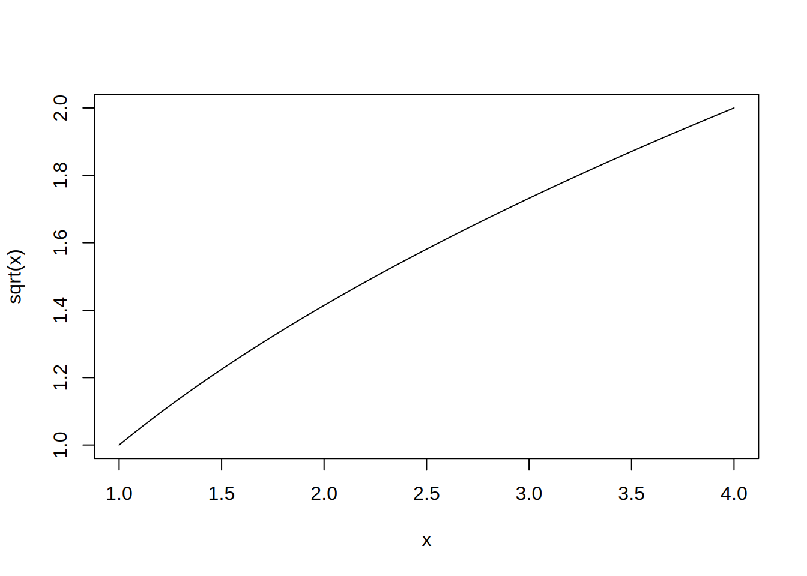
2 Introduction to Simulation and Arena
LEARNING OBJECTIVES
To understand the basic components of the Arena Environment
To be able to perform simple Monte Carlo simulations in Arena
To be able to recognize and define the characteristics of a discrete-event dynamic system (DEDS)
To be able to explain how time evolves in a DEDS
To be able to develop and read an activity flow diagram
To be able to create, run, animate, and examine the results of an model of a simple DEDS
In this chapter, we explore the Arena simulation software platform for developing and executing simulation models. After highlighting the Arena modeling environment, we will consider some small models for both static and dynamic simulation. The coverage of static simulation will allow us to introduce the modeling environment without having to introduce the notion of the discrete-event clock. Then, we will begin our study of the major emphasis of this textbook: modeling discrete-event dynamic systems. As defined in Chapter 1, a discrete-event dynamic system (DEDS) is a system that evolves dynamically through time. This chapter will introduce how time evolves for DEDSs and illustrate how to develop a model for a simple queuing system. Let’s jump into Arena.
2.1 The Arena Environment
Arena is a commercial software program that facilitates the development and execution of computer simulation models. The provides access to an underlying simulation language called SIMAN through an environment that permits the building of models using a drag and drop flow chart methodology. The environment has panels that provide access to language modeling constructs. In addition, the environment provides toolbar and menu access to common simulation activities, such as animating the model, running the model, and viewing the results.
Figure 2.1 illustrates the Arena Environment with the View, Draw, Animate, and Animate Transfer toolbars detached (floating) within the environment. In addition, the Project Bar contains the project templates (Advanced Transfer, Advanced Process, Basic Process, Flow Process), the report, and the navigate panels. By right-clicking within the project template area, you can access the context menu for attaching/detaching project templates. The project templates, indicated by the diamond flowchart symbol are used to build models in the model window. Normally, the Advanced Transfer and Flow Process panels are not attached. Additional modeling constructs can be accessed by attaching these templates to the project bar. In addition, you can control the size and view option for the modules. For example, you can change the view of the modules to see them as large icons, small icons, or as text only.
The report panel allows you to drill down into the reports that are generated after a simulation run. The navigation panel allows the definition and use of links (bookmarks) to pre-specified areas of the model window. The Arena Environment normally has the toolbars docked allowing unobstructed access to the model window and the spreadsheet (data) window. The flow chart oriented symbols from the project templates are “dragged and dropped” into the model window. The flow chart symbols are called modules.
The spreadsheet view presents a row/column format for the currently selected module in the model window. In addition, the spreadsheet view allows data entry for those modules (e.g. VARIABLE) that are used in the model but for which there is not a flow chart oriented representation. You will learn about the various characteristics of flow chart modules and data modules as you proceed throughout this text.
To hide or view the toolbars, you can right-click within the gray toolbar area and check the desired toolbars within the contextual pop-up menu. In addition, you can also drag the toolbars to the desired location within the environment. Figure 2.2 illustrates the Arena Environment with the toolbars and project bar docked in their typical standard locations. The model window has modules (CREATE, PROCESS, DISPOSE) from the basic process panel and the spreadsheet (data) window is showing the spreadsheet view for the CREATE module. Throughout the text, I will use all capital letters to represent the names of modules. This is only a convention of this textbook to help you to identify the constructs. We will also use these module names when we write text based pseudo-code to represent our conceptual understanding of the problem to be modeled.
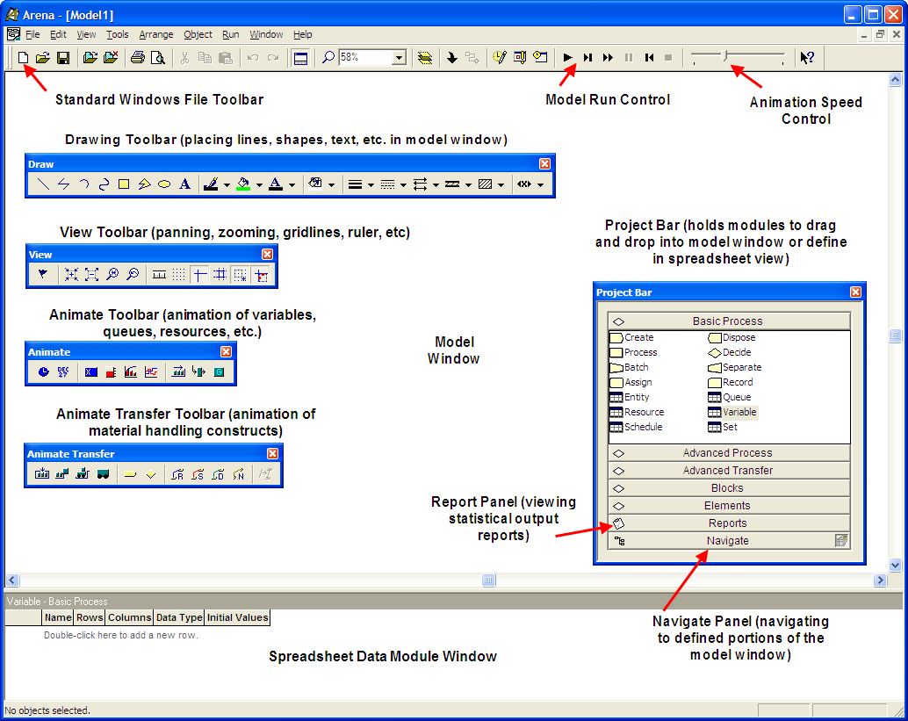
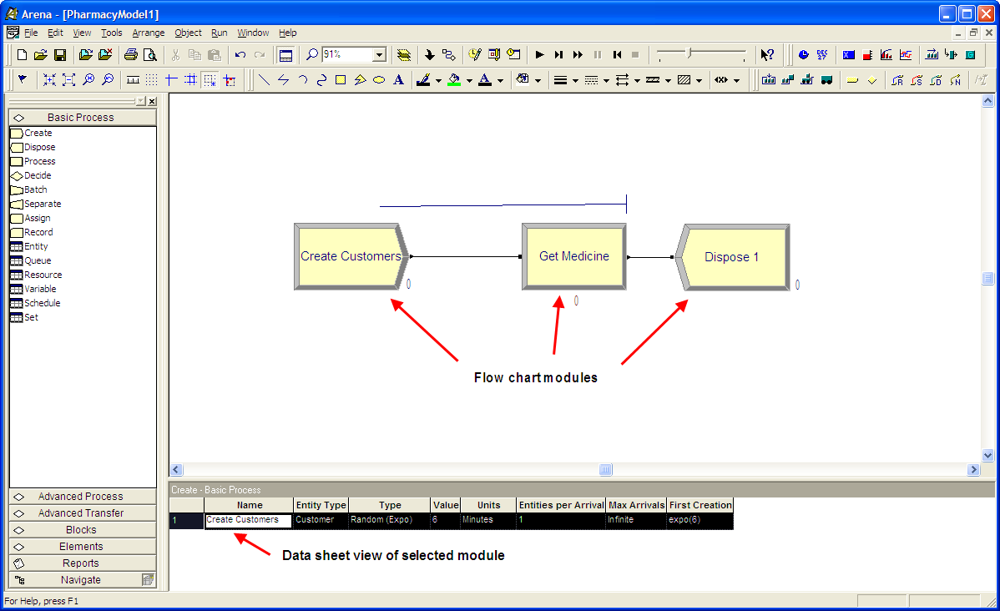
2.2 Performing Simple Monte-Carlo Simulations using Arena
The term Monte Carlo generally refers to the set of methods and techniques predicated on estimating quantities by repeatedly sampling from models/equations represented in a computer. As such, this terminology is somewhat synonymous with computer simulation itself. The term Monte Carlo gets its origin from the Monte Carlo casino in the Principality of Monaco, where gambling and games of chance are well known. There is no one Monte Carlo method. Rather there is a collection of algorithms and techniques. In fact, the ideas of random number generation and random variate generation previously discussed form the foundation of Monte Carlo methods.
For the purposes of this chapter, we limit the term Monte Carlo methods to those techniques for generating and estimating the expected values of random variables, especially in regards to static simulation. In static simulation, the notion of time is relatively straightforward with respect to system dynamics. For a static simulation, time ‘ticks’ in a regular pattern and at each ‘tick’ the state of the system changes (new observations are produced). This should be contrasted with dynamic simulation, where the state of the system evolves over time and the state changes at irregularly (randomly occurring) points in time. Dynamic simulation (specifically discrete-event simulation) will be the subject of subsequent sections of this chapter and other chapters in the book.
2.2.1 Simple Monte Carlo Integration
In this section, we will illustrate one of the fundamental uses of Monte Carlo methods: estimating the area of a function. Suppose we have some function, \(g(x)\), defined over the range \(a \leq x \leq b\) and we want to evaluate the integral:
\[\theta = \int\limits_{a}^{b} g(x)\mathrm{d}x\]
Monte Carlo methods allow us to evaluate this integral by couching the problem as an estimation problem. It turns out that the problem can be translated into estimating the expected value of a well-chosen random variable. While a number of different choices for the random variable exist, we will pick one of the simplest for illustrative purposes. Define \(Y\) as follows with \(X \sim U(a,b)\):
\[ Y = \left(b-a\right)g(X) \tag{2.1}\]
Notice that \(Y\) is defined in terms of \(g(X)\), which is also a random variable. Because a function of a random variable is also a random variable, this makes \(Y\) a random variable. Thus, the expectation of \(Y\) can be computed as follows:
\[ E[Y] = E[\left(b-a\right)g(X)] = \left(b-a\right)E[g(X)] \tag{2.2}\]
Now, let us derive, \(E[g(X)]\). By definition,
\[E_{X}[g(X)] = \int\limits_{a}^{b} g(x)f_{X}(x)\mathrm{d}x\]
And, the probability density function for a \(X \sim U(a,b)\) random variable is:
\[f_{X}(x) = \begin{cases} \frac{1}{b-a} & a \leq x \leq b\\ 0 & \text{otherwise} \end{cases}\]
Therefore,
\[E_{X}[g(X)] = \int\limits_{a}^{b} g(x)f_{X}(x)\mathrm{d}x = \int\limits_{a}^{b} g(x)\frac{1}{b-a}\mathrm{d}x\]
Substituting this result into Equation 2.2, yields,
\[ \begin{aligned} E[Y] & = E[\left(b-a\right)g(X)] = \left(b-a\right)E_{X}[g(X)]\\ & = \left(b-a\right)\int\limits_{a}^{b} g(x)\frac{1}{b-a}\mathrm{d}x \\ & = \int\limits_{a}^{b} g(x)\mathrm{d}x= \theta \end{aligned} \tag{2.3}\]
Therefore, by estimating the expected value of \(Y\), we can estimate the desired integral. From basic statistics, we know that a good estimator for \(E[Y]\) is the sample average of observations of \(Y\). Let \((Y_1, Y_2,\ldots, Y_n)\) be a random sample of observations of \(Y\). Let \(X_{i}\) be the \(i^{th}\) observation of the variable \(X\). Substituting each \(X_{i}\) into Equation 2.1 yields the \(i^{th}\) observation of \(Y\),
\[ Y_{i} = \left(b-a\right)g(X_{i}) \tag{2.4}\]
Then, the sample average of is:
\[\begin{aligned} \bar{Y}(n) & = \frac{1}{n}\sum\limits_{i=1}^{n} Y_i = \left(b-a\right)\frac{1}{n}\sum\limits_{i=1}^{n}\left(b-a\right)g(X_{i})\\ & = \left(b-a\right)\frac{1}{n}\sum\limits_{i=1}^{n}g(X_{i})\\\end{aligned}\]
where \(X_{i} \sim U(a,b)\). Thus, by simply generating \(X_{i} \sim U(a,b)\), plugging the \(X_{i}\) into the function of interest, \(g(x)\), taking the average over the values and multiplying by \(\left(b-a\right)\), we can estimate the integral. This works for any integral and it works for multi-dimensional integrals. While this discussion is based on a single valued function, the theory scales to multi-dimensional integration through the use of multi-variate distributions. Now, let’s illustrate the estimation of the area under a curve for a simple function.
Example 2.1 Suppose that we want to estimate the area under \(f(x) = x^{\frac{1}{2}}\) over the range from \(1\) to \(4\) as illustrated in Figure 2.3. That is, we want to evaluate the integral:
\[\theta = \int\limits_{1}^{4} x^{\frac{1}{2}}\mathrm{d}x = \dfrac{14}{3}=4.6\bar{6}\]
According to the previously presented theory, we need to generate \(X_i \sim U(1,4)\) and then compute \(\bar{Y}\), where \(Y_i = (4-1)\sqrt{X{_i}}= 3\sqrt{X{_i}}\). This can be readily accomplished using Arena. In addition, for this simple example, we can easily check if our Monte Carlo approach is working because we know the true area.
Example 2.1 estimates the area under a very simple function. In fact, we know from basic calculus that the area is \(\theta = 14/3 = 4.6\bar{6}\). As will be seen in the following solution. the result of the simulation is very close to the true value. The difference between the estimated result and the true value is due to sampling error. We will discuss more about this important topic in Section 3.3.
Even though this example is rather simple, the basic idea can be used for any complicated function and can be readily adapted for multi-dimensional integrals. Now, let’s solve this problem using Arena.
2.2.2 Arena Modules Needed for Static Simulation Examples
In this section we will implement the Monte Carlo area estimation problem using Arena. First, we need to introduce four programming modules that we will use to develop these simulations.
CREATE - This module creates entities that go through other modules causing their logic to be executed.
ASSIGN - This module allows us to assign values to variables with a model.
RECORD - This module permits the collection of statistics on expressions.
DISPOSE - This module disposes of entities after they are done executing within the model.
VARIABLE - This module is used to define variables within the model and to initialize their values.
These modules (VARIABLE, CREATE, ASSIGN, RECORD, and DISPOSE) all have additional functionality that will be described later in the text; however, the above definitions will suffice to get us started for this example.
Second, we need to have a basic understanding of the mathematical and distribution function modeling that is available within Arena. While Arena has a wide range of mathematical and distribution modeling capabilities, only the subset necessary for the Monte Carlo examples will be illustrated in this section.
Here is a overview of the mathematical and distribution functions that we will be using:
- UNIF(a,b) - This function will return a random variate from a uniform distribution over the range from a to b.
DISC(\(cp_1\), \(v_1\), \(cp_2\), \(v_2\), ...) - This function returns a random variate from a discrete empirical cumulative distribution function, where \(cp_i\), \(v_i\) are the the pairs \(cp_i = P\left\{X \leq v_i\right\}\) for the CDF.
SQRT(x) - This function returns the square root of x.
MN(x1, x2,...) - This function returns the minimum of the values presented.
MX(x1, x2,...) - This function returns the maximum of the values presented.
In the following sections, we will put these modules and functions into practice.
2.2.3 Area Estimation via Arena
In the example, we are interested in estimating the area under \(f(x) = x^{\frac{1}{2}}\) over the range from \(1\) to \(4\). The following pseudo-code outlines the basic code that will be used for estimating the area of the function within Arena.
CREATE 1 entity
BEGIN ASSIGN
vXi = UNIF(1,4)
vFx = SQRT(vXi)
vY = (4.0 - 1.0)*vFx
END ASSIGN
RECORD vY
DISPOSEThis pseudo-code is very self-explanatory. It outlines the modeling approach using syntax that is similar to constructs that appear in Arena. We will define more carefully the use of pseudo-code in the modeling process starting in Chapter 3. The CREATE statement generates 1 entity, which then executes the rest of the code. We will learn more about the concept of an entity when we use entities in the DEDS modeling in later sections of the book. For the purposes of this example, think of the entity as representing an observation that will invoke the subsequent listed commands. The ASSIGN represents the assignments that generate the value of \(x\), evaluate \(f(x)\), and compute \(y\). The RECORD indicates that statistics should be collected on the value of \(y\). Finally, the DISPOSE indicates that the generated entity should be disposed (removed from the program). This is only pseudo-code! It does not represent a functioning Arena model. However, it is useful to conceptualize the program in this fashion so that you can more readily implement it within the Arena environment.
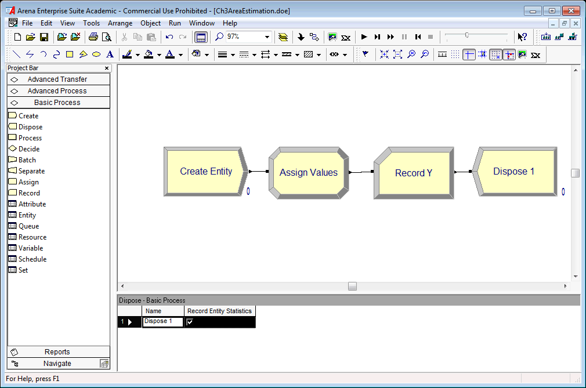
Figure 2.4 represent the flow chart solution within the environment. Notice the CREATE, ASSIGN, RECORD, and DISPOSE modules laid out in the model window. A CREATE module creates entities that flow through other modules. Figure 2.5 illustrates the creating of 1 entity by setting the maximum number of entities field to the value 1. Since the First Creation field has a value of 0.0, there will be 1 entity that is created at time 0. The CREATE module will be discussed in further detail, later in this chapter. The created entity will move to the next module (ASSIGN) and cause its logic to be executed.
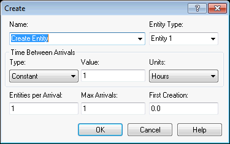
An ASSIGN module permits the assignment of values to various quantities of interest in the model. In Figure 2.6, a listing of the assignments for generating the value of \(x\), computing \(f(x)\), and \(y\) are provided. Each assignment is executed in the order listed. It is important to get the order correct when you write your programs!
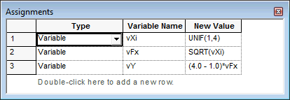
Figure 2.7 shows the RECORD module for this situation. The value of the variable \(vY\) is in the Value text field. Because the Type of the record is set at Expression, the value of this variable will be observed every time an entity passes through the module. The observations will be tabulated so that the sample average and 95% half-width will be reported automatically on the output reports, labeled by the text in the Tally Name field. The results are illustrated in Figure 2.8.
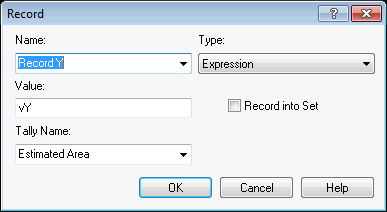
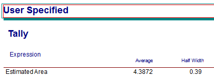
In order to run the model, you must indicate the required number of observations. Since each run of the model produces 1 entity and thus 1 observation, you need to specify the number of times that you want to run the model. This is accomplished using the Run Setup menu item. Figure 2.9 shows that the model is set to run for 20 replications. Replications will be discussed later in the text, but for now, you can think of a replication as a running of the model to produce observations. Each replication is independent of other replications. Thus, the observations across replications form a random sample of the observations. Arena will automatically report the statistics across the replications.
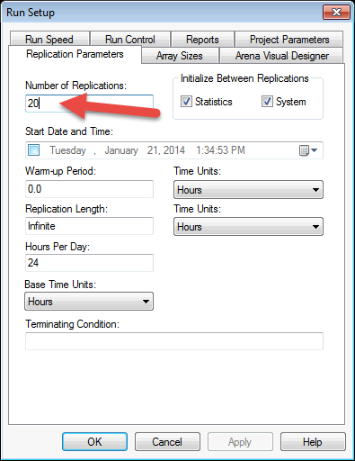
Figure 2.8 shows the results of estimating the area of the curve. Notice that the average value (4.3872) reported for the variable observed in the RECORD module is close to the true value of \(4.6\bar{6}\) computed for Example 2.1. The difference between the estimated value and the true value is due to sampling error. We will discuss how to control sampling error within Chapter 3. The area estimation model can be found within this Chapter’s files as AreaEstimation.doe.
Now let’s look at a slightly more complex static simulation.
2.2.4 The News Vendor Problem
The news vendor model is a classic inventory model that allows for the modeling of how much to order for a decision maker facing uncertain demand for an upcoming period of time. It takes on the news vendor moniker because of the context of selling newspapers at a newsstand. The vendor must anticipate how many papers to have on hand at the beginning of a day so as to not run short or have papers left over. This idea can be generalized to other more interesting situations (e.g. air plane seats). Discussion of the news vendor model is often presented in elementary textbooks on inventory theory. The reader is referred to (Muckstadt & Sapras, 2010) for a discussion of this model.
The basic model is considered a single period model; however, it can be extended to consider an analysis covering multiple (or infinite) future periods of demand. The representation of the costs within the modeling offers a number of variations.
Let \(D\) be a random variable representing the demand for the period. Let \(F(d)= P[D \leq d]\) be the cumulative distribution function for the demand. Define \(G(q,D)\) as the profit at the end of the period when \(q\) units are ordered at the start of the period with \(D\) units of demand. The parameter \(q\) is the decision variable associated with this model. Depending on the value of \(q\) chosen by the news vendor, a profit or loss will occur.
There are two cases to consider \(D \geq q\) or \(D < q\). That is, when demand is greater than or equal to the amount ordered at the start of the period and when demand is less than the amount ordered at the start of the period. If \(D \geq q\) the news vendor runs out of items, and if \(D < q\) the news vendor will have items left over.
In order to develop a profit model for this situation, we need to define some model parameters. In addition, we need to determine the amount that we might be short and the amount we might have left over in order to determine the revenue or loss associated with a choice of \(q\). Let \(c\) be the purchase cost. This is the cost that the news vendor pays the supplier for the item. Let \(s\) be the selling price. This is the amount that the news vendor charges customers. Let \(u\) be the salvage value (i.e. the amount per unit that can be received for the item after the planning period). For example, the salvage value can be the amount that the news vendor gets when selling a left over paper to a recycling center. We assume that selling price \(>\) purchase cost \(>\) salvage value.
Consider the context of a news vendor planning for the day. What is the possible amount sold? If \(D\) is the demand for the day and we start with \(q\) items, then the most that can be sold is \(\min(D, q)\). That is, if \(D\) is bigger than \(q\), you can only sell \(q\). If \(D\) is smaller than \(q\), you can only sell \(D\).
What is the possible amount left over (available for salvage)? If \(D\) is the demand and we start with \(q\), then there are two cases: 1) demand is less than the amount ordered (\(D < q\)) or 2) demand is greater than or equal to the amount ordered (\(D \geq q\)). In case 1, we will have \(q-D\) items left over. In case 2, we will have \(0\) left over. Thus, the amount left over at the end of the day is \(\max(0, q-D)\). Since the news vendor buys \(q\) items for \(c\), the cost of the items for the day is \(c \times q\). Thus, the profit has the following form:
\[ G(D,q) = s \times \min(D, q) + u \times \max(0, q-D) - c \times q \tag{2.5}\]
In words, the profit is equal to the sales revenue plus the salvage revenue minus the ordering cost. The sales revenue is the selling price times the amount sold. The salvage revenue is the salvage value times the amount left over. The ordering cost is the cost of the items times the amount ordered. To find the optimal value of \(q\), we should try to maximize the expected profit. Since \(D\) is a random variable, \(G(D,q)\) is also a random variable. Taking the expected value of both sides of Equation 2.5, yields:
\[g(q) = E[G(D,q)] = sE[\min(D, q)] + uE[\max(0, q-D)] - cq\]
Whether or not this equation can be optimized depends on the form of the distribution of \(D\); however, simulation can be used to estimate this expected value for any given \(q\). Let’s look at an example.
Example 2.2 Sly’s convenience store sells BBQ wings for 25 cents a piece. They cost 15 cents a piece to make. The BBQ wings that are not sold on a given day are purchased by a local food pantry for 2 cents each. Assuming that Sly decides to make 30 wings a day, what is the expected revenue for the wings provided that the demand distribution is as show in Table 2.1.
| \(d_{i}\) | 5 | 10 | 40 | 45 | 50 | 55 | 60 |
|---|---|---|---|---|---|---|---|
| \(f(d_{i})\) | 0.1 | 0.2 | 0.3 | 0.2 | 0.1 | 0.05 | 0.05 |
| \(F(d_{i})\) | 0.1 | 0.3 | 0.6 | 0.8 | 0.9 | 0.95 | 1.0 |
The pseudo-code for the news vendor problem will require the generation of the demand from BBQ Wing demand distribution. In order to generate from this distribution, the DISC() function should be used. Since the cumulative distribution has already been computed, it is straight forward to write the inputs for the DISC() function. The function specification is:
\[\textit{DISC}(0.1,5,0.3,10,0.6,40,0.8,45,0.9,50,0.95,55,1.0,60)\]
Notice the pairs (\(F(d_{i})\), \(d_{i}\)). The final value of \(F(d_{i})\) must be the value 1.0.
First, let us define some variables to be used in the modeling: demand, amount sold, amount left at the end of the day, sales revenue, salvage revenue, price per unit, cost per unit, salvage per unit, and order quantity.
Let vDemand represent the daily demand
Let vAmtSold represent the amount sold
Let vAmtLeft represent the amount left at the end of the day
Let vSalesRevenue represent the sales revenue
Let vSalvageRevenue represent the salvage revenue
Let vPricePerUnit = 0.25 represent the price per unit
Let vCostPerUnit = 0.15 represent the cost per unit
Let vSalvagePerUnit = 0.02 represent the salvage value per unit
Let vOrderQty = 30 represent the amount ordered each day
The pseudo-code for this situation is as follows.
CREATE 1 entity
BEGIN ASSIGN
vDemand = DISC(0.1,5,0.3,10,0.6,40,0.8,45,0.9,50,0.95,55,1.0,60)
vAmtSold = MN(vDemand, vOrderQty)
vAmtLeft = MX(0, vOrderQty - vDemand)
vSalesRevenue = vAmtSold*vPricePerUnit
vSalvageRevenue = vAmtLeft*vSalvagePerUnit
vOrderingCost = vCostPerUnit*vOrderQty
vProfit = vSalesRevenue + vSalvageRevenue - vOrderingCost
END ASSIGN
RECORD vProfit
DISPOSEThe CREATE module creates the an entity to represent the day. The ASSIGN modules implement the logic associated with the news vendor problem. The MN() function is used to compute the minimum of the demand and the amount ordered. The MX() function determines the amount unsold. The DISC() function implements the CDF of the demand in order to generate the daily demand. The rest of the equations follow directly from the previous discussion. The flow chart solution is illustrated in Figure 2.10 and uses the same flow chart modules (CREATE, ASSIGN, RECORD, DISPOSE) as in the last example.
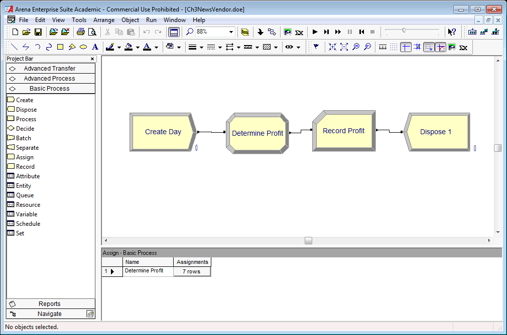
To implement the variable definitions from the pseudo-code, you need to use a VARIABLE module to provide the initial values of the variables. Notice in Figure 2.11 the definition of each variable and how the initial value of the variable vCostPerUnit is showing. The CREATE module is setup exactly as in the last example. The created entity will move to the next module (ASSIGN) illustrated in Figure 2.12. The assignments follow exactly the previously illustrate pseudo-code. Running the model for 100 days results in the output illustrated in Figure 2.13.
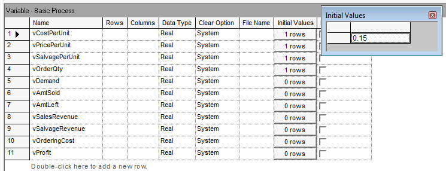
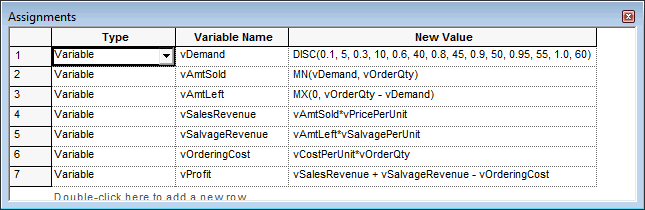
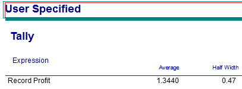
The news vendor model can be found within this Chapter’s files as NewsVendor.doe.
In this section, we explored how to develop models in for which time is not a significant factor. In the case of the news vendor problem, where we simulated each day’s demand, time advanced at regular intervals. In the case of the area estimation problem, time was not a factor in the simulation. These types of simulations are often termed static simulation. In the next section, we begin our exploration of simulation where time is an integral component in driving the behavior of the system. In addition, we will see that time will not necessarily advance at regular intervals (e.g. hour 1, hour 2, etc.). This will be the focus of the rest of the book.
2.3 How the Discrete-Event Clock Works
This section introduces the concept of how time evolves in a discrete event simulation. This topic will also be revisited in future chapters after you have developed a deeper understanding for many of the underlying elements of simulation modeling.
In discrete-event dynamic systems, an event is something that happens at an instant in time which corresponds to a change in system state. An event can be conceptualized as a transmission of information that causes an action resulting in a change in system state. Let’s consider a simple bank which has two tellers that serve customers from a single waiting line. In this situation, the system of interest is the bank tellers (whether they are idle or busy) and any customers waiting in the line. Assume that the bank opens at 9 am, which can be used to designate time zero for the simulation. It should be clear that if the bank does not have any customers arrive during the day that the state of the bank will not change. In addition, when a customer arrives, the number of customers in the bank will increase by one. In other words, an arrival of a customer will change the state of the bank. Thus, the arrival of a customer can be considered an event.
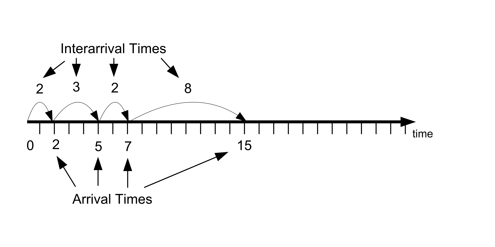
| Customer | Time of arrival | Time between arrival |
|---|---|---|
| 1 | 2 | 2 |
| 2 | 5 | 3 |
| 3 | 7 | 2 |
| 4 | 15 | 8 |
Figure 2.14 illustrates a time line of customer arrival events. The values for the arrival times in Table 2.2 have been rounded to whole numbers, but in general the arrival times can be any real valued numbers greater than zero. According to the figure, the first customer arrives at time two and there is an elapse of three minutes before customer 2 arrives at time five. From the discrete-event perspective, nothing is happening in the bank from time \([0,2)\); however, at time 2, an arrival event occurs and the subsequent actions associated with this event need to be accounted for with respect to the state of the system. An event denotes an instance of time that changes the state of the system. Since an event causes actions that result in a change of system state, it is natural to ask: What are the actions that occur when a customer arrives to the bank?
The customer enters the waiting line.
If there is an available teller, the customer will immediately exit the line and the available teller will begin to provide service.
If there are no tellers available, the customer will remain waiting in the line until a teller becomes available.
Now, consider the arrival of the first customer. Since the bank opens at 9 am with no customer and all the tellers idle, the first customer will enter and immediately exit the queue at time 9:02 am (or time 2) and then begin service. After the customer completes service, the customer will exit the bank. When a customer completes service (and departs the bank) the number of customers in the bank will decrease by one. It should be clear that some actions need to occur when a customer completes service. These actions correspond to the second event associated with this system: the customer service completion event. What are the actions that occur at this event?
The customer departs the bank.
If there are waiting customers, the teller indicates to the next customer that he/she will serve the customer. The customer will exit the waiting line and will begin service with the teller.
If there are no waiting customers, then the teller will become idle.
Figure 2.15 contains the service times for each of the four customers that arrived in Figure 2.14. Examine the figure with respect to customer 1. Based on the figure, customer 1 can enter service at time two because there were no other customers present in the bank. Suppose that it is now 9:02 am (time 2) and that the service time of customer 1 is known in advance to be 8 minutes as indicated in Table 2.3. From this information, the time that customer 1 is going to complete service can be pre-computed. From the information in the figure, customer 1 will complete service at time 10 (current time + service time = 2 + 8 = 10). Thus, it should be apparent, that for you to recreate the bank’s behavior over a time period that you must have knowledge of the customer’s service times. The service time of each customer coupled with the knowledge of when the customer began service allows the time that the customer will complete service and depart the bank to be computed in advance. A careful inspection of Figure 2.15 and knowledge of how banks operate should indicate that a customer will begin service either immediately upon arrival (when a teller is available) or coinciding with when another customer departs the bank after being served. This latter situation occurs when the queue is not empty after a customer completes service. The times that service completions occur and the times that arrivals occur constitute the pertinent events for simulating this banking system.
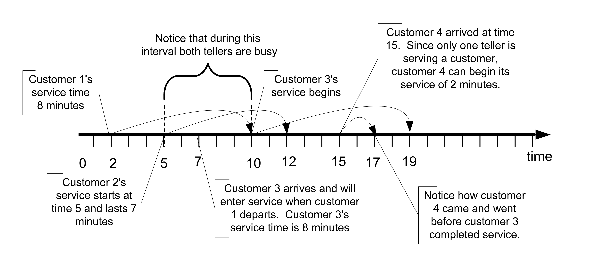
| Customer | Service Time Started | Service Time | Service Time Completed |
|---|---|---|---|
| 1 | 2 | 8 | 10 |
| 2 | 5 | 7 | 12 |
| 3 | 10 | 9 | 19 |
| 4 | 15 | 2 | 17 |
If the arrival and the service completion events are combined, then the time ordered sequence of events for the system can be determined. Figure 2.16 illustrates the events ordered by time from smallest event time to largest event time. Suppose you are standing at time two. Looking forward, the next event to occur will be at time 5 when the second customer arrives. When you simulate a system, you must be able to generate a sequence of events so that, at the occurrence of each event, the appropriate actions are invoked that change the state of the system.
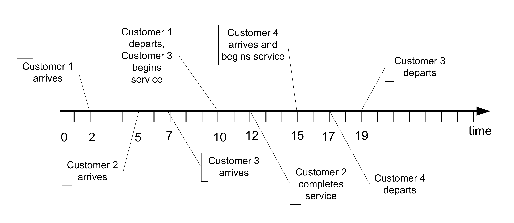
In the following table, \(c_i\) represents the \(i^{th}\) customer and \(s_j\) represents the \(j^{th}\) teller.
| Time | Event | Comment |
|---|---|---|
| 0 | Bank 0pens | |
| 2 | Arrival | \(c_1\) arrives, enters service for 8 min., \(s_1\) becomes busy |
| 5 | Arrival | \(c_2\) arrives, enters service for 7 min., the \(s_2\) becomes busy |
| 7 | Arrival | \(c_3\) arrives, waits in queue |
| 10 | Service Completion | \(c_1\) completes service, \(c_3\) exits queue, enters service for 9 min. |
| 12 | Service Completion | \(c_2\) completes service, queue is empty, \(s_2\) becomes idle |
| 15 | Arrival | \(c_4\) arrives, enters service for 2 min., \(s_2\) becomes busy |
| 17 | Service Completion | \(c_4\) completes service, \(s_2\) becomes idle |
| 19 | Service Completion | \(c_3\) completes service, \(s_1\) becomes idle |
The real system will simply evolve over time; however, a simulation of the system must recreate the events. In simulation, events are created by adding additional logic to the normal state changing actions. This additional logic is responsible for scheduling future events that are implied by the actions of the current event. For example, when a customer arrives, the time to the next arrival can be generated and scheduled to occur at some future time. This can be done by generating the time until the next arrival and adding it to the current time to determine the actual arrival time. Thus, all the arrival times do not need to be pre-computed prior to the start of the simulation. For example, at time two, customer 1 arrived. Customer 2 arrives at time 5. Thus, the time between arrivals (3 minutes) is added to the current time and customer 2’s arrival at time 5 is scheduled to occur. Every time an arrival occurs this additional logic is invoked to ensure that more arrivals will continue within the simulation.
Adding additional scheduling logic also occurs for service completion events. For example, since customer 1 immediately enters service at time 2, the service completion of customer 1 can be scheduled to occur at time 12 (current time + service time = 2 + 10 = 12). Notice that other events may have already been scheduled for times less than time 12. In addition, other events may be inserted before the service completion at time 12 actually occurs. From this, you should begin to get a feeling for how a computer program can implement some of these ideas.
Based on this intuitive notion for how a computer simulation may execute, you should realize that computer logic processing need only occur at the event times. That is, the state of the system does not change between events. Thus, it is not necessary to step incrementally through time checking to see if something happens at time 0.1, 0.2, 0.3, etc. (or whatever time scale you envision that is fine enough to not miss any events). Thus, in a discrete-event dynamic system simulation the clock does not “tick” at regular intervals. Instead, the simulation clock jumps from event time to event time. As the simulation moves from the current event to the next event, the current simulation time is updated to the time of the next event and any changes to the system associated with the next event are executed. This allows the simulation to evolve over time.
2.4 Simulating a Queueing System By Hand
This section builds on the concepts discussed in the previous section in order to provide insights into how discrete event simulations operate. In order to do this, we will simulate a simple queueing system by hand. That is, we will process each of the events that occur as well as the state changes in order to trace the operation of the system through time.
Consider again the simple banking system described in the previous section. To simplify the situation, we assume that there is only one teller that is available to provide service to the arriving customers. Customers that arrive while the teller is already helping a customer form a single waiting line, which is handled in a first come, first served manner. Let’s assume that the bank opens at 9 am with no customers present and the teller idle. The time of arrival of the first eight customers is provided in the following Table 2.4
| Customer Number | Time of Arrival | Service Time |
|---|---|---|
| 1 | 3 | 4 |
| 2 | 11 | 4 |
| 3 | 13 | 4 |
| 4 | 14 | 3 |
| 5 | 17 | 2 |
| 6 | 19 | 4 |
| 7 | 21 | 3 |
| 8 | 27 | 2 |
We are going to process these customers in order to recreate the behavior of this system over from time 0 to 31 minutes. To do this, we need to be able to perform the “bookkeeping” that a computer simulation model would normally perform for us. Thus, we will need to define some variables associated with the system and some attributes associated with the customers. Consider the following system variables.
System Variables
Let \(t\) represent the current simulation clock time.
Let \(N(t)\) represent the number of customers in the system (bank) at any time \(t\).
Let \(Q(t)\) represent the number of customers waiting in line for the teller at any time \(t\).
Let \(B(t)\) represent whether or not the teller is busy (1) or idle (0) at any time \(t\).
Because we know the number of tellers available, we know that the following relationship holds between the variables:
\[N\left( t \right) = Q\left( t \right) + B(t)\]
Note also that, knowledge of the value of \(N(t)\) is sufficient to determine the values of \(Q(t)\) and \(B(t)\) at any time \(t.\) For example, if we know that there are 3 customers in the bank, then \(N\left( t \right) = 3\), and since the teller must be serving 1 of those customers, \(B\left( t \right) = 1\) and there must be 2 customers waiting, \(Q\left( t \right) = 2\). In this situation, since \(N\left( t \right)\), is sufficient to determine all the other system variables, we can say that \(N\left( t \right)\) is the system’s state variable. The state variable(s) are the minimal set of system variables that are necessary to represent the system’s behavior over time. We will keep track of the values of all of the system variables during our processing in order to collect statistics across time.
Attributes are properties of things that move through the system. In the parlance of simulation, we call the things that move through the system entity instances or entities. In this situation, the entities are the customers, and we can define a number of attributes for each customer. Here, customer is a type of entity or entity type. If we have other things that flow through the system, we identity the different types (or entity types). The attributes of the customer entity type are as follows. Notice that each attribute is subscripted by \(i\), which indicates the \(i^{th}\) customer instance.
Entity Attributes
Let \(\mathrm{ID}_{i}\) be the identity number of the customer. \(\mathrm{ID}_{i}\) is a unique number assigned to each customer that identifies the customer from other customers in the system.
Let \(A_{i}\) be the arrival time of the \(i^{\mathrm{th}}\) customer.
Let \(S_{i}\) be the time the \(i^{\mathrm{th}}\) customer started service.
Let \(D_{i}\) be the departure time of the \(i^{\mathrm{th}}\) customer.
Let \(\mathrm{ST}_{i}\) be the service time of the \(i^{\mathrm{th}}\) customer.
Let \(T_{i}\) be the total time spent in the system of the \(i^{\mathrm{th}}\) customer.
Let \(W_{i}\) be the time spent waiting in the queue for the \(i^{\mathrm{th}}\) customer.
Clearly, there are also relationships between these attributes. We can compute the total time in the system for each customer from their arrival and departure times:
\[T_{i} = D_{i} - A_{i}\]
In addition, we can compute the time spent waiting in the queue for each customer as:
\[W_{i} = T_{i} - \mathrm{ST}_{i} = S_{i} - A_{i}\]
As in the previous section, there are two types of events: arrivals and departures. Let \(E(t)\) be (A) for an arrival event at time \(t\) and be (D) for a departure event at time \(t\). As we process each event, we will keep track of when the event occurs and the type of event. We will also keep track of the state of the system after each event has been processed. To make this easier, we will keep track of the system variables and the entity attributes within a table as follows.
| t | E(t) | N(t) | B(t) | Q(t) | ID(i) | A(i) | ST(i) | S(i) | D(i) | T(i) | W(i) | Pending E(t) |
|---|---|---|---|---|---|---|---|---|---|---|---|---|
| 0 | NA | 0 | 0 | 0 | NA | NA | NA | NA | NA | NA | NA | NA |
In the table, we see that the initial state of the system is empty and idle. Since there are no customers in the bank, there are no tabulated attribute values within the table. Reviewing the provided information, we see that customer 1 arrives at \(t = 3\) and has a service time of 4 minutes. Thus,\(\ \text{ID}_{1} = 1\), \(A_{1} = 3\), and \(\text{ST}_{1} = 4\). We can enter this information directly into our bookkeeping table. In addition, because the bank was empty and idle when the customer arrived, we can note that the time that customer 1 starts service is the same as the time of their arrival and that they did not spend any time waiting in the queue. Thus, \(S_{1} = 3\) and \(W_{1} = 0\). The table has been updated as follows.
| t | E(t) | N(t) | B(t) | Q(t) | ID(i) | A(i) | ST(i) | S(i) | D(i) | T(i) | W(i) | Pending E(t) |
|---|---|---|---|---|---|---|---|---|---|---|---|---|
| 0 | NA | 0 | 0 | 0 | NA | NA | NA | NA | NA | NA | NA | NA |
| 3 | A | 1 | 1 | 0 | 1 | 3 | 4 | 3 | NA | NA | 0 | E(7) = D(1), E(11) = A(2) |
Because customer 1 arrived to an empty system, they immediately started service at time 3. Since we know the service time of the customer, \(\text{ST}_{1} = 4\), and the current time, \(t = 3\), we can determine that customer 1, will depart from the system at time 7 (\(t = 3 + 4 = 7\)). That means we will have a departure event for customer 1 at time 7. According to the provided data, the next customer, customer 2, will arrive at time 11. Thus, we have two pending events, a departure of customer 1 at time 7 and the arrival of customer 2 at time 11. This fact is noted in the column labeled “Pending E(t)” for pending events. Here E(7) = D(1), E(11) = A(2) indicates that customer 1 with depart,\(\ D_{1},\) at time 7, \(E\left( 7 \right)\) and customer 2 will arrive, \(A_{2}\), at the event at time 11, \(E(11)\). Clearly, the next event time will be the minimum of 7 and 11, which will be the departure of the first customer. Thus, our bookkeeping table can be updated as follows.
| t | E(t) | N(t) | B(t) | Q(t) | ID(i) | A(i) | ST(i) | S(i) | D(i) | T(i) | W(i) | Pending E(t) |
|---|---|---|---|---|---|---|---|---|---|---|---|---|
| 0 | NA | 0 | 0 | 0 | NA | NA | NA | NA | NA | NA | NA | NA |
| 3 | A | 1 | 1 | 0 | 1 | 3 | 4 | 3 | NA | NA | 0 | E(7) = D(1), E(11) = A(2) |
| 7 | D | 0 | 0 | 0 | 1 | 3 | 4 | 3 | 7 | 4 | 0 | E(11) = A(2) |
Since there are no customers in the bank and only the one pending event, the next event will be the arrival of customer 2 at time 11. The table can be updated as follows.
| t | E(t) | N(t) | B(t) | Q(t) | ID(i) | A(i) | ST(i) | S(i) | D(i) | T(i) | W(i) | Pending E(t) |
|---|---|---|---|---|---|---|---|---|---|---|---|---|
| 0 | NA | 0 | 0 | 0 | NA | NA | NA | NA | NA | NA | NA | NA |
| 3 | A | 1 | 1 | 0 | 1 | 3 | 4 | 3 | NA | NA | 0 | E(7) = D(1), E(11) = A(2) |
| 7 | D | 0 | 0 | 0 | 1 | 3 | 4 | 3 | 7 | 4 | 0 | E(11) = A(2) |
| 11 | A | 1 | 1 | 0 | 2 | 11 | 4 | 11 | NA | NA | 0 | E(13) = A(3), E(15) = D(2) |
Since the pending event set is E(13) = A(3), E(15) = D(2) the next event will be the arrival of the third customer at time 13 before the departure of the second customer at time 15. We will now have a queue form. Updating our bookkeeping table, yields:
| t | E(t) | N(t) | B(t) | Q(t) | ID(i) | A(i) | ST(i) | S(i) | D(i) | T(i) | W(i) | Pending E(t) |
|---|---|---|---|---|---|---|---|---|---|---|---|---|
| 0 | NA | 0 | 0 | 0 | NA | NA | NA | NA | NA | NA | NA | NA |
| 3 | A | 1 | 1 | 0 | 1 | 3 | 4 | 3 | NA | NA | 0 | E(7) = D(1), E(11) = A(2) |
| 7 | D | 0 | 0 | 0 | 1 | 3 | 4 | 3 | 7 | 4 | 0 | E(11) = A(2) |
| 11 | A | 1 | 1 | 0 | 2 | 11 | 4 | 11 | NA | NA | 0 | E(13) = A(3), E(15) = D(2) |
| 13 | A | 2 | 1 | 1 | 3 | 13 | 4 | 15 | NA | NA | 2 | E(14) = A(4), E(15) = D(2) |
Customer 3 will start service, when customer 2 departs. When customer 2 departs at time 15, we can go back and update row 5 (t = 13) to indicate that customer 3’s value for \(S(i)\) is now 15. With \(S(i) = 15\), we can compute the waiting time \(W(i)\) for customer 3 as \(S(i) - A(i) = 15 - 13 = 2\) for row 5. Reviewing the pending event set, we see that the next event will be the arrival of customer 4 at time 14, which yields the following bookkeeping table.
| t | E(t) | N(t) | B(t) | Q(t) | ID(i) | A(i) | ST(i) | S(i) | D(i) | T(i) | W(i) | Pending E(t) |
|---|---|---|---|---|---|---|---|---|---|---|---|---|
| 0 | NA | 0 | 0 | 0 | NA | NA | NA | NA | NA | NA | NA | NA |
| 3 | A | 1 | 1 | 0 | 1 | 3 | 4 | 3 | NA | NA | 0 | E(7) = D(1), E(11) = A(2) |
| 7 | D | 0 | 0 | 0 | 1 | 3 | 4 | 3 | 7 | 4 | 0 | E(11) = A(2) |
| 11 | A | 1 | 1 | 0 | 2 | 11 | 4 | 11 | NA | NA | 0 | E(13) = A(3), E(15) = D(2) |
| 13 | A | 2 | 1 | 1 | 3 | 13 | 4 | 15 | NA | NA | 2 | E(14) = A(4), E(15) = D(2) |
| 14 | A | 3 | 1 | 2 | 4 | 14 | 3 | 19 | NA | NA | 5 | E(15) = D(2), E(17) = A(5) |
Notice that we now have 3 customers in the system, 1 in service and 2 waiting in the queue. Reviewing the pending event set, we see that customer 2 will finally complete service and depart at time 15.
| t | E(t) | N(t) | B(t) | Q(t) | ID(i) | A(i) | ST(i) | S(i) | D(i) | T(i) | W(i) | Pending E(t) |
|---|---|---|---|---|---|---|---|---|---|---|---|---|
| 0 | NA | 0 | 0 | 0 | NA | NA | NA | NA | NA | NA | NA | NA |
| 3 | A | 1 | 1 | 0 | 1 | 3 | 4 | 3 | NA | NA | 0 | E(7) = D(1), E(11) = A(2) |
| 7 | D | 0 | 0 | 0 | 1 | 3 | 4 | 3 | 7 | 4 | 0 | E(11) = A(2) |
| 11 | A | 1 | 1 | 0 | 2 | 11 | 4 | 11 | NA | NA | 0 | E(13) = A(3), E(15) = D(2) |
| 13 | A | 2 | 1 | 1 | 3 | 13 | 4 | 15 | NA | NA | 2 | E(14) = A(4), E(15) = D(2) |
| 14 | A | 3 | 1 | 2 | 4 | 14 | 3 | 19 | NA | NA | 5 | E(15) = D(2), E(17) = A(5) |
| 15 | D | 2 | 1 | 1 | 2 | 11 | 4 | 11 | 15 | 4 | 0 | E(17) = A(5), E(19) = D(3) |
Because customer 2 completes service at time 15 and customer 3 is waiting in the line, we see that customer 3’s attributes for \(S_{i}\) and \(W_{i}\) were updated within the table. Since customer 3 has started service and we know their service time of 4 minutes, we know that they will depart at time 19. The pending events set has been updated accordingly and indicates that the next event will be the arrival of customer 5 at time 17.
| t | E(t) | N(t) | B(t) | Q(t) | ID(i) | A(i) | ST(i) | S(i) | D(i) | T(i) | W(i) | Pending E(t) |
|---|---|---|---|---|---|---|---|---|---|---|---|---|
| 0 | NA | 0 | 0 | 0 | NA | NA | NA | NA | NA | NA | NA | NA |
| 3 | A | 1 | 1 | 0 | 1 | 3 | 4 | 3 | NA | NA | 0 | E(7) = D(1), E(11) = A(2) |
| 7 | D | 0 | 0 | 0 | 1 | 3 | 4 | 3 | 7 | 4 | 0 | E(11) = A(2) |
| 11 | A | 1 | 1 | 0 | 2 | 11 | 4 | 11 | NA | NA | 0 | E(13) = A(3), E(15) = D(2) |
| 13 | A | 2 | 1 | 1 | 3 | 13 | 4 | 15 | NA | NA | 2 | E(14) = A(4), E(15) = D(2) |
| 14 | A | 3 | 1 | 2 | 4 | 14 | 3 | 19 | NA | NA | 5 | E(15) = D(2), E(17) = A(5) |
| 15 | D | 2 | 1 | 1 | 2 | 11 | 4 | 11 | 15 | 4 | 0 | E(17) = A(5), E(19) = D(3) |
| 17 | A | 3 | 1 | 2 | 5 | 17 | 2 | 22 | NA | NA | 5 | E(19) = D(3), E(19) = A(6) |
Now, we have a very interesting situation with the pending event set. We have two events that are scheduled to occur at the same time, the departure of customer 3 at time 19 and the arrival of customer 6 at time 19. In general, the order in which events are processed that occur at the same time may affect how future events are processed. That is, the order of event processing may change the behavior of the system over time and thus the order of processing is, in general, important. However, in this particular simple system, the order of processing will not change what happens in the future. We will simply have an update of the state variables at the same time. In this instance, we will process the departure event first and then the arrival event. If you are not convinced that this will not make a difference, then I encourage you to change the ordering and continue the processing. In more complex system simulations, a priority indicator is attached to the events so that the events can be processed in a consistent manner. Rather than continuing the step-by-step processing of the events through time 31, we will present the completed table. We leave it as an exercise for the reader to continue the processing of the customers. The completed bookkeeping table at time 31 is as follows.
| t | E(t) | N(t) | B(t) | Q(t) | ID(i) | A(i) | ST(i) | S(i) | D(i) | T(i) | W(i) | Pending E(t) |
|---|---|---|---|---|---|---|---|---|---|---|---|---|
| 0 | NA | 0 | 0 | 0 | NA | NA | NA | NA | NA | NA | NA | NA |
| 3 | A | 1 | 1 | 0 | 1 | 3 | 4 | 3 | NA | NA | 0 | E(7) = D(1), E(11) = A(2) |
| 7 | D | 0 | 0 | 0 | 1 | 3 | 4 | 3 | 7 | 4 | 0 | E(11) = A(2) |
| 11 | A | 1 | 1 | 0 | 2 | 11 | 4 | 11 | NA | NA | 0 | E(13) = A(3), E(15) = D(2) |
| 13 | A | 2 | 1 | 1 | 3 | 13 | 4 | 15 | NA | NA | 2 | E(14) = A(4), E(15) = D(2) |
| 14 | A | 3 | 1 | 2 | 4 | 14 | 3 | 19 | NA | NA | 5 | E(15) = D(2), E(17) = A(5) |
| 15 | D | 2 | 1 | 1 | 2 | 11 | 4 | 11 | 15 | 4 | 0 | E(17) = A(5), E(19) = D(3) |
| 17 | A | 3 | 1 | 2 | 5 | 17 | 2 | 22 | NA | NA | 5 | E(19) = D(3), E(19) = A(6) |
| 19 | D | 2 | 1 | 1 | 3 | 13 | 4 | 15 | 19 | 6 | 2 | E(19) = A(6) |
| 19 | A | 3 | 1 | 2 | 6 | 19 | 4 | 24 | NA | NA | 5 | E(21) = A(7), E(22) = D(4) |
| 21 | A | 4 | 1 | 3 | 7 | 21 | 3 | 28 | NA | NA | 7 | E(22) = D(4), E(24) = D(5) |
| 22 | D | 3 | 1 | 2 | 4 | 14 | 3 | 19 | 22 | 8 | 5 | E(24) = D(5), E(27) = A(8) |
| 24 | D | 2 | 1 | 1 | 5 | 17 | 2 | 22 | 24 | 7 | 5 | E(27) = A(8), E(28) = D(6) |
| 27 | A | 3 | 1 | 2 | 8 | 27 | 2 | 31 | NA | NA | 4 | E(28) = D(6), E(31) = D(7) |
| 28 | D | 2 | 1 | 1 | 6 | 19 | 4 | 24 | 28 | 9 | 5 | E(31) = D(7) |
| 31 | D | 1 | 1 | 0 | 7 | 21 | 3 | 28 | 31 | 10 | 7 | E(33) = D(8) |
Given that we have simulated the bank over the time frame from 0 to 31 minutes, we can now compute performance statistics for the bank and measure how well it is operating. Two statistics that we can easily compute are the average time spent waiting in line and the average time spent in the system.
Let \(n\) be the number of customers observed to depart during the simulation. In this simulation, we had \(n = 7\) customers depart during the time frame of 0 to 31 minutes. The time frame over which we analyze the performance of the system is call the simulation time horizon. In this case, the simulation time horizon is fixed and known in advance. When we perform a computer simulation experiment, the time horizon is often referred to as the simulation run length (or simulation replication length). To estimate the average time spent waiting in line and the average time spent in the system, we can simply compute the sample averages ( \(\overline{T}\) and \(\bar{W})\) of the observed quantities (\(T_{i}\) and \(W_{i}\))for each departed customer.
\[\overline{T} = \frac{1}{7}\sum_{i = 1}^{7}T_{i} = \frac{4 + 4 + 6 + 8 + 7 + 9 + 10}{7} = \frac{48}{7} \cong 6.8571\]
\[\overline{W} = \frac{1}{7}\sum_{i = 1}^{7}W_{i} = \frac{0 + 0 + 2 + 5 + 5 + 5 + 7}{7} = \frac{24}{7} \cong 3.4286\]
Besides the average time spent in the system and the average time spent waiting, we might also want to compute the average number of customers in the system, the average number of customers in the queue, and the average number of busy tellers. You might be tempted to simply average the values in the \(N(t)\), \(B(t)\), and \(Q(t)\) columns of the bookkeeping table. Unfortunately, that will result in an incorrect estimate of these values because a simple average will not take into account how long each of the variables persisted with its values over time. In this situation, we are really interested in computed a time average. This is because the variables, \(N(t)\), \(B(t)\), and \(Q(t)\) are time-based variables. This type of variable is always encountered in discrete event simulations.
To make the discussion concrete, let’s focus on the number of customers in the queue, \(Q(t)\). Notice the number of customers in the queue, \(Q(t)\) takes on constant values during intervals of time corresponding to when the queue has a certain number of customers. \(Q(t) = \{ 0,1,2,3,\ldots\}\). The values of \(Q(t)\) form a step function in this particular case. The following figure illustrates the step function nature of this type of variable. A realization of the values of variable is called a sample path.
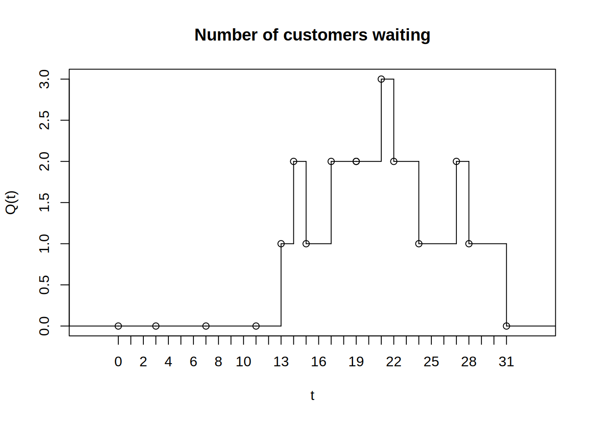
That is, for a given (realized) sample path, \(Q(t)\) is a function that returns the number of customers in the queue at time \(t\). The mean value theorem of calculus for integrals states that given a function, \(f( \bullet )\), continuous on an interval \((a, b)\), there exists a constant, c, such that
\[\int_{a}^{b}{f\left( x \right)\text{dx}} = f(c)(b - a)\]
\[f\left( c \right) = \frac{\int_{a}^{b}{f\left( x \right)\text{dx}}}{(b - a)}\]
The value, \(f(c)\), is called the mean value of the function. A similar function can be defined for \(Q(t)\) This function is called the time-average (and represents the mean value of the \(Q(t)\) function):
\[\overline{Q}\left( n \right) = \frac{\int_{t_{0}}^{t_{n}}{Q\left( t \right)\text{dt}}}{t_{n} - t_{0}}\]
This function represents the average with respect to time of the given state variable. This type of statistical variable is called time-based because \(Q(t)\) is a function of time.
In the particular case where \(Q(t)\) represents the number of customers in the queue, \(Q(t)\) will take on constant values during intervals of time corresponding to when the queue has a certain number of customers. Let \(Q\left( t \right) = \ q_{k}\ \)for\(\ t_{k - 1} \leq t \leq t_{k}\). Then, the time-average can be rewritten as follows:
\[\overline{Q}\left( t \right) = \frac{\int_{t_{0}}^{t_{n}}{Q\left( t \right)\text{dt}}}{t_{n} - t_{0}} = \sum_{k = 1}^{n}\frac{q_{k}(t_{k} - t_{k - 1})}{t_{n} - t_{0}}\] Note that \(q_{k}(t_{k} - t_{k - 1})\) is the area under the curve, \(Q\left( t \right)\) over the interval \(t_{k - 1} \leq t \leq t_{k}\) and because \[t_{n} - t_{0} = \left( t_{1} - t_{0} \right) + \left( t_{2} - t_{1} \right) + \left( t_{3} - t_{2} \right) + \ \cdots + \left( t_{n - 1} - t_{n - 2} \right) + \ \left( t_{n} - t_{n - 1} \right)\] we can write, \[t_{n} - t_{0} = \sum_{k = 1}^{n}{t_{k} - t_{k - 1}}\]
The quantity \(t_{n} - t_{0}\) represents the total time over which the variable is observed. Thus, the time average is simply the area under the curve divided by the amount of time over which the curve is observed. From this equation, it should be noted that each value of \(q_{k}\) is weighted by the length of time that the variable has the value. If we define, \(w_{k} = (t_{k} - t_{k - 1})\), then we can re-write the time average as:
\[\overline{Q}\left( t \right) = \frac{\int_{t_{0}}^{t_{n}}{Q\left( t \right)\text{dt}}}{t_{n} - t_{0}} = \sum_{k = 1}^{n}\frac{q_{k}(t_{k} - t_{k - 1})}{t_{n} - t_{0}} = \frac{\sum_{k = 1}^{n}{q_{k}w_{k}}}{\sum_{i = 1}^{n}w_{k}}\]
This form of the equation clearly shows that each value of \(q_{k}\) is weighted by:
\[\frac{w_{k}}{\sum_{i = 1}^{n}w_{k}} = \frac{w_{k}}{t_{n} - t_{0}} = \frac{(t_{k} - t_{k - 1})}{t_{n} - t_{0}}\]
This is why the time average is often called the time-weighted average. If \(w_{k} = 1\), then the time-weighted average is the same as the sample average.
Now we can compute the time average for \(Q\left( t \right),\ N\left( t \right)\) and \(B(t)\). Using the following formula and noting that \(t_{n} - t_{0} = 31\)
\[\overline{Q}\left( t \right) = \sum_{k = 1}^{n}\frac{q_{k}(t_{k} - t_{k - 1})}{t_{n} - t_{0}}\]
We have that the numerator computes as follows:
\[\sum_{k = 1}^{n}{q_{k}\left( t_{k} - t_{k - 1} \right)} = 0\left( 13 - 0 \right) + \ 1\left( 14 - 13 \right) + \ 2\left( 15 - 14 \right) + \ 1\left( 17 - 15 \right) + \ 2\left( 19 - 17 \right)\]
\[\ + 1\left( 19 - 19 \right) + \ 2\left( 21 - 19 \right) + \ 3\left( 22 - 21 \right) + \ 2\left( 24 - 22 \right) + \ \]
\[1\left( 27 - 24 \right) + \ 2\left( 28 - 27 \right) + \ 1\left( 31 - 28 \right) = 28\]
And, the final time-weighted average number in the queue ss:
\[\overline{Q}\left( t \right) = \frac{28}{31} \cong 0.903\]
The average number in the system and the average number of busy tellers can also be computed in a similar manner, resulting in:
\[\overline{N}\left( t \right) = \frac{52}{31} \cong 1.677\]
\[\overline{B}\left( t \right) = \frac{24}{31} \cong 0.7742\]
The value of \(\overline{B}\left( t \right)\) is most interesting for this situation. Because there is only 1 teller, the fraction of the tellers that are busy is 0.7742. This quantity represents the utilization of the teller. The utilization of a resource represents the proportion of time that the resource is busy. Let c represent the number of units of a resource that are available. Then the utilization of the resource is defined as:
\[\overline{U} = \frac{\overline{B}\left( t \right)}{c} = \frac{\int_{t_{0}}^{t_{n}}{B\left( t \right)\text{dt}}}{c(t_{n} - t_{0})}\]
Notice that the numerator of this equation is simply the total time that the resource is busy. So, we are computing the total time that the resource is busy divided by the total time that the resource could be busy, \(c(t_{n} - t_{0})\), which is considered the utilization.
In the following section, we will explore the basic elements of a process-oriented simulation.
2.5 Elements of Process-Oriented Simulation
Chapter 1 described a system as a set of inter-related components that work together to achieve common objectives. In this chapter, a method for modeling the operation of a system by describing its processes is presented. In the simplest sense, a process can be thought of as a sequence of activities, where an activity is an element of the system that takes an interval of time to complete. In the bank teller example, the service of the customer by the teller was an activity. The representation of the dynamic behavior of the system by describing the process flows of the entities moving through the system is called process-oriented modeling. When developing a simulation model using the process-view, there are a number of terms and concepts that are often used. Before learning some of these concepts in more detail, it is important that you begin with an understanding of some of the vocabulary used within simulation. The following terms will be used throughout the text:
- System
-
A set of inter-related components that act together over time to achieve common objectives.
- Parameters
-
Quantities that are properties of the system that do not change. These are typically quantities (variables) that are part of the environment that the modeler feels cannot be controlled or changed. Parameters are typically model inputs in the form of variables.
- Variables
-
Quantities that are properties of the system (as a whole) that change or are determined by the relationships between the components of the system as it evolves through time.
- System State
-
A “snap shot" of the system at a particular point in time characterized by the values of the variables that are necessary for determining the future evolution of the system from the present time. The minimum set of variables that are necessary to describe the future evolution of the system is called the system’s state variables.
- Entity Type
-
A class of things (objects) that interact with the system elements. Entity types describe entity instances.
- Entity or Entity Instance
-
An object of interest in the system whose movement or operation within the system may cause the occurrence of events. Entities are instances of an Entity Type.
- Attribute
-
A named property or variable that is associated with an entity type. The value of the attribute is associated with the entity instance described by the entity type.
- Event
-
An instantaneous occurrence or action that changes the state of the system at a particular point in time.
- Activity
-
An interval of time bounded by two events (start event and end event).
- Resource
-
A limited quantity of items that are used (e.g. seized and released) by entities as they proceed through the system. A resource has a capacity that governs the total quantity of items that may be available. All the items in the resource are homogeneous, meaning that they are indistinguishable. If an entity attempts to seize a resource that does not have any units available it must wait in a queue.
- Queue
-
A location that holds entities when their movement is constrained within the system.
- Future Event List
-
A list that contains the time ordered sequence of events for the simulation.
When developing models, it will be useful to identify the elements of the system that fit some of these definitions. An excellent place to develop your understanding of these concepts is with entities because process-oriented modeling is predicated on describing the life of an entity as it moves through the system.
2.5.1 Entities, Attributes, and Variables
When modeling a system, there are often many entity types. For example, consider a retail store. Besides customers, the products might also be considered as entity types. The products (instances of the entity type) are received by the store and wait on the shelves until customers select them for purchase. Entities (entity instances) may come in groups and then are processed individually or they might start out as individual units that are formed into groups. For example, a truck arriving to the store may be an entity that consists of many pallets that contain products. The customers select the products from the shelves and during the check out process the products are placed in bags. The customers then carry their bags to their cars. Entities are uniquely identifiable within the system. If there are two customers in the store, they can be distinguished by the values of their attributes. For example, considering a product as an entity type, it may have attributes serial number, weight, category, and price. The set of attributes for a type of entity is called its attribute set. While all products might have these attributes, they do not necessarily have the same values for each attribute. For example, consider the following two products:
(serial number = 12345, weight = 8 ounces, category = green beans, price = $0.87)
(serial number = 98765, weight = 8 ounces, category = corn, price = $1.12)
The products carry or retain these attributes and their values as they move through the system. In other words, attributes are attached to or associated with entity types. The values of the attributes for particular entity instances might change during the operation of the system. For example, a mark down on the price of green beans might occur after some period of time. Attributes can be thought of as variables that are attached to entity types.
Not all information in a system is local to the entity types. For example, the number of customers in the store, the number of carts, and the number of check out lanes are all characteristics of the system. These types of data are called system attributes. In simulation models, this information can be modeled with global variables or other data modules (e.g. resources) to which all entity instances can have access. By making these quantities visible at the system level, the information can be shared between the entity instances within the model and between the components of the system.
Figure 2.18 illustrates the difference between global (system) variables and entities with their attributes in the context of a warehouse. In the figure, the trucks are entities with attributes: arrival time, type of product, amount of product, and load tracking number. Notice that both of the trucks have these attributes, but each truck has different values for their attributes. The figure also illustrates examples of global variables, such as, number of trucks loading, number of trucks unloading, number of busy forklifts, etc. This type of information belongs to the whole system.

Once a basic understanding of the system is accomplished through understanding system variables, the entities, and their attributes, you must start to understand the processes within the system. Developing the process description for the various types of entities within a system and connecting the flow of entities to the changes in state variables of the system is the essence of process-oriented modeling. In order for entities to flow through the model and experience processes, you must be able to create (and dispose of) the entities. The following section describes how allows the modeler to create and dispose of entities.
2.5.2 Creating and Disposing of Entities
The basic mechanism by which entity instances are introduced into a model is the CREATE module. An entity (entity instance) is an object that flows within the model. As an entity flows through the model it causes the execution of each module through which it flows. Because of this, nothing will happen in a model unless entities are created. Entities can be used to represent instances of actual physical objects that move through the system. For example, in a model of a manufacturing system, entities that represent the parts that are produced by the system will need to be created. Sometimes entities do not have a physical representation in the system and are simply used to represent some sort of logical use. For example, an entity, whose sole purpose is to generate random numbers or to read data from an input file, may be created within a model. You will learn various ways to model with entities as you proceed through the text.
Figure 2.19 illustrates the CREATE module dialog box that opens when double-clicking on the flow chart symbol within the model window. Understanding what the dialog box entries mean is essential to writing models. Each dialog box has a Help button associated with it. Clicking on this button will reveal help files that explain the basic functionality of the module. In addition, the text field prompts are explained within the help system.
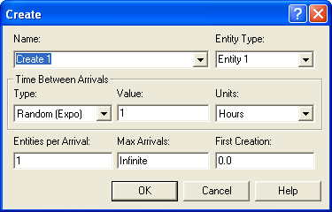
According to the help files, the basic dialog entries are as follows:
- Type
-
Type of arrival stream to be generated. Types include: Random (uses an Exponential distribution, user specifies the mean of the distribution), Schedule (specifies a non-homogeneous Poisson process with rates determined from the specified Schedule module), Constant (user specifies a constant value, e.g., 100), or Expression (pull down list of various distributions or general expressions written by the user).
- Value
-
Determines the mean of the exponential distribution (if Random is used) or the constant value (if Constant is used) for the time between arrivals. Applies only when Type is Random or Constant. Can be a general expression when the type is specified as Expression.
- Entities per Arrival
-
Number of entities that will enter the system at a given time with each arrival. This allows for the modeling of batch arrivals.
- Max Arrivals
-
Maximum number of entities that the module will generate. When this value is reached, the creation of new entities by the module ceases.
- First Creation
-
Starting time for the first entity to arrive into the system. Does not apply when Type is Schedule.
The CREATE module defines a repeating pattern for an arrival process. The time between arrivals is governed by the specification of the type of arrival stream. The time between arrivals specifies an ordered sequence of events in time at which entities are created and introduced to the model. At each event, a number of entities can be created. The number of entities created is governed by the “Entities per Arrival” field, which may be stochastic. The first arrival is governed by the specification of the “First Creation” time, which also may be stochastic. The maximum number of arrival events is governed by the “Max Arrivals” entry. Figure 2.20 illustrates an arrival process where the time of the first arrival is given by T1, the time of the second arrival is given by T1 + T2, and the time of the third arrival is given by T1 + T2 + T3. In the figure, the number of arriving entities at each arriving event is given by N1, N2, and N3 respectively.
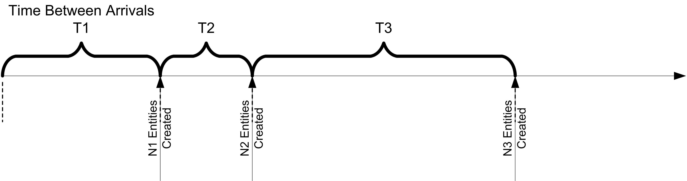
A CREATE module works by scheduling a future event to occur according to the specified pattern. At each occurrence of the event, a new instance of the entity type is created. The instance is called an entity. The entity instance then executes additional modules until the entity instance hits a module that blocks its progress. More details of how this process works is provided in Section 2.10. The CREATE module continues scheduling the next creation event until the maximum number of creation events is reached or the simulation ends. A common creation process is the Poisson arrival process.
To specify a Poisson arrival process with mean rate \(\lambda\), a CREATE module as shown in Figure 2.21 can be used. Why does this specify a Poisson arrival process? Because the time between arrivals for a Poisson process with rate \(\lambda\) is exponentially distributed with the mean of the exponential distribution being \(1/\lambda\).
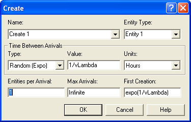
To specify a compound arrival process, use the “Entities per Arrival” field. For example, suppose you have a compound Poisson process where the distribution for the number created at each arrival is governed by a discrete distribution. See (Ross, 1997) for more information on the theory of compound Poisson processes.
\[P(X = x) = \left\{ \begin{array}{ll} 0.2 & \quad \text{x = 1}\\ 0.3 & \quad \text{x = 2}\\ 0.5 & \quad \text{x = 3} \end{array} \right.\]
Figure 2.22 shows the CREATE module for this compound Poisson process with the entities per arrival field using the DISC(0.2, 1, 0.5, 2, 1.0, 3) discrete empirical distribution function.
When developing models, it is often useful to create one entity and use that entity to trigger other actions in the model. For example, to read in information from a file, a logical entity can be created at time zero and used to execute a READ module. To create one and only one entity at time zero, specify the Max Arrivals field as one, the First Creation field as 0.0, the Entities per Arrival as one, and the type field as Constant. The value specified for the constant will be immaterial since only one entity will be created.
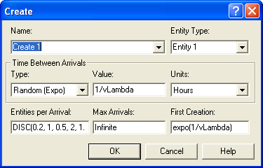
Each entity that is created allocates memory for the entity. Once the entity has traveled through its process within the model, the entity should be disposed. The DISPOSE module acts as a “sink” to dispose of entities when they are no longer needed within the model.
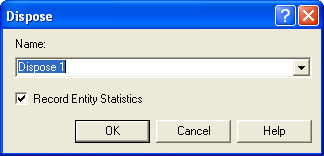
Figure 2.23 illustrates the dialog box for the DISPOSE module. The DISPOSE module indicates the number of entities that are disposed by the module within the animation. In addition, the default action is to record the entity statistics prior to disposing the entity. If the Entities Statistics Collection field is checked within the Project Parameters tab of the Run/Setup dialog, the entity statistics will include VA Time (value added time), NVA Time (non-value added time), Wait Time, Transfer Time, Other Time and entity Total Time. If the Costing Statistics Collection field is also checked within the Project Parameters tab of the Run/Setup dialog, additional entity statistics include VA Cost (value added cost), NVA Cost (non-value added cost), Wait Cost, Transfer Cost, Other Cost, and Total Cost. Additionally, the number of entities leaving the system (for a given entity type) and currently in the system (WIP, work in process) will be tabulated. These cost allocations assume an activity based costing model which is beyond the scope of this chapter.
You now know how to introduce entities into a model and how to dispose of entities after you are done with them. To make use of the entities within the model, you must first understand how to define and use variables and entity attributes within a model.
2.5.3 Defining Variables and Attributes
In a programming language like C, variables must first be defined before using them in a program. For example, in C, a variable named x can be defined as type float and then used in assignment statements such as: float x; x = x + 2;
Variables in standard programming languages have a specific scope associated with their execution. For example, variables defined within a function are limited to use within that function. Global variables that can be used throughout the entire program may also be defined.
In , all variables are global. You can think of variables as belonging to the system being modeled. Everything in the system can have access to the variables of the system. Variables provide a named location in computer memory that persists until changed during execution. The naming conventions for declaring variables in are quite liberal. This can be both a curse and a blessing. Because of this, you should adopt a standard naming convention when defining variables. The models in this text try to start the name of all variables with the letter “v”. For example, in the previously discussed CREATE module examples, the variable vLambda was used to represent the arrival rate of the Poisson process. This makes it easy to distinguish variables from other constructs when reviewing, debugging, and documenting the model.
In addition, the naming rules allow the use of spaces within a variable name, e.g. This is a legal name is a legally named variable. Suppose you needed to count the number of parts and decided to name your variable Part Count. The use of spaces in this manner should be discouraged because woe unto you if you have this problem: Part Count and Part Count. Can you see the problem? The second variable Part Count has extra spaces between Part and Count. Try searching through every dialog box to find that in a model!
According to the naming convention recommended here, you would name this variable vPartCount, concatenating and capitalizing the individual components of the name. Of course you are free to name your variables whatever you desire as long as the names do not conflict with already existing variables or keywords within Arena. To learn more about the specialized variables available within Arena, you should refer to the portable document file (PDF) document Variables Guide, which comes with the installation. Reading this document should give you a better feeling for the functional capabilities of Arena.
To declare variables, you use the VARIABLE module found in the Basic Process template. The VARIABLE module is a data module and is accessed either through the spreadsheet view (Figure 2.24) or through a dialog box (Figure 2.25).
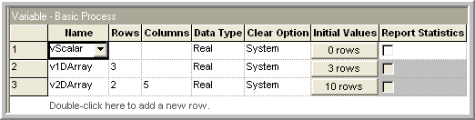
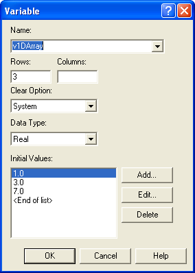
Variables can be scalars or can be defined as arrays. The arrays can be either 1-dimensional or 2-dimensional. For 1-dimensional arrays, you specify either the number of rows or the number of columns. There is no difference between an array specified with, say 3 rows, or an array specified with 3 columns. The net effect is that there will be three variables defined which can be indexed by the numbers 1, 2, and 3. When defining a 2-dimensional array of variables (see Figure 2.26), you specify the number of rows and columns. Array indexes start at 1 and run through the size of the specified dimension. A runtime error will occur if the index used to access an array is not within the bounds of the array’s dimensions.
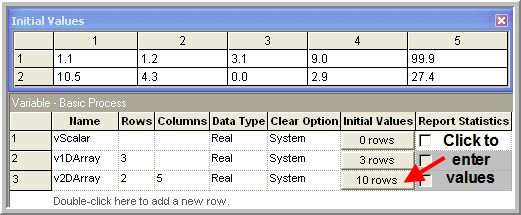
When defining a variable or an array of variables, you may specify the initial value(s). The default initial value for all variables is zero. By using the spreadsheet view within the Data window, see Figure 2.24, you can easily enter the initial values for variables and arrays. All variables are treated as real numbers. If you need to represent an integer, e.g. vPartCount, you simply represent it as a variable. There is no specific integer data type.
It is important to remember that all variables or arrays are global within Arena. Variables are used to share information across all modules within the model. You should think of variables as characteristics or properties of the model as a whole. Variables belong to the entire system being modeled.
Arena has another data type that is capable of holding values called an attribute. An attribute is a named property or characteristic of an entity. For example, suppose the time to produce a part depends on the dimensions or area associated with the part. A CREATE module can be used to create entities that represent the parts. After the parts are created, the area associated with each part needs to be set. Each part created could have different values for its area attribute.
Part 1: area = 5 square inches
Part 2: area = 10 square inches
Part 1 and part 2 have the same named attribute, area, but the value for this attribute is different for each part.
For those readers familiar with object-oriented programming, attributes in are similar in concept to attributes associated with objects in languages such as VB.Net, Java, and C++. If you understand the use of attributes in those languages, then you have a basis for how attributes can be used within . When an instance of an entity is created within , it is like creating an object in an object-oriented language. The object instance has attributes associated with it. You can think of an entity as a record or a row of data that is associated with that particular object instance. Each row represents a different entity.
| IDENT | Entity.SerialNumber | Size | Weight | ProcessingTime |
|---|---|---|---|---|
| 1 | 1001 | 2 | 33 | 20 |
| 2 | 1002 | 3 | 22 | 55 |
| 3 | 1003 | 1 | 11 | 44 |
| 4 | 1001 | 2 | 33 | 20 |
| 5 | 1004 | 5 | 10 | 14 |
| 6 | 1005 | 4 | 14 | 10 |
Table 2.14 presents six entities conceptualized as records in a table. You can think of the creation and disposing of entities as adding and deleting records within the model’s “entity table”. The column IDENT represents the IDENT attribute, which uniquely identifies each entity (instance). IDENT is a special pre-defined attribute that is used to uniquely track entities currently in the model. The IDENT attribute is assigned when the entity is created. When an entity is created, memory is allocated for the entity and all of its attributes. A different value for IDENT is assigned to each entity that currently exists within the model. When an entity is disposed, the memory associated with that entity is released and the values for IDENT will be reused for newly created entities. Thus, the IDENT attribute uniquely identifies entities currently in the model. No two entities currently in the model have the same value for the IDENT attribute. Think of IDENT as the primary key into the entity record table.
Every entity in the model has a unique row in the table to store its attribute values. Entity.SerialNumber is just one of those attributes. The Entity.SerialNumber attribute is also a number assigned to an entity instance when it is created; however, if the entity is ever duplicated (cloned) in the model, the clones will have the same value for the Entity.SerialNumber attribute. When an entity is cloned (duplicated) all attributes except IDENT are duplicated. Entity.SerialNumber will not be unique when entities are cloned. IDENT can be used to uniquely identify an entity. Entity.SerialNumber can be used to identity entities that have the same serial number. In other words, all duplicates of an entity instance. In the table, there are two entities (1 and 4) that are duplicates of each other. The duplication of entities will be discussed later in this chapter. The size, weight, and processing time attributes are three user defined attributes associated with each of the entities. To find a description of the full list of pre-defined entity attributes, do a search on “Attributes and Entity-Related Variables" in the Help system.
When you define a user-defined attribute, you are adding another “column” to the “entity table”. The implication of this statement is very important. The defining of a user-defined attribute associates that attribute with every entity type. This is quite different than what you see in object-oriented languages where you can associate specific attributes with specific classes (types) of objects. Within Arena, an entity type is an entity type. You can specify attributes that can allow you to conceptualize them as being different. This is conceptually defining the attribute set for the entity type that was previously mentioned. For example, you might create entities and think of them as parts flowing in a manufacturing system. Within a manufacturing system, there might also be entities that represent pallets that assist in material handling within the system. A part may have a processing time attribute and a pallet may have a move time attribute.
| IDENT | Type | Size | Weight | MoveTime | ProcessingTime |
|---|---|---|---|---|---|
| 1 | 1 | 2 | 33 | ——- | 20 |
| 2 | 1 | 3 | 22 | ——- | 55 |
| 3 | 2 | 1 | 11 | 23 | ——- |
In Table 2.15, the type attribute indicates the type of entity (part = 1, pallet = 2). Notice that all entities have the move time and processing time attributes defined. These attributes can be used regardless of the actual type of entity. In using attributes within Arena, it is up to the modeler to provide the appropriate context (understanding of the attribute set) for an entity instance and then to use the attributes and their values appropriately within that context.
There are two ways to distinguish between different types of entities. Each entity has a pre-defined attribute, called Entity.Type, which can be used to set the type of the entity. In addition, you can specify a user defined attribute to indicate the type of the entity. Arena’s on-line help has this to say about the Entity.Type attribute:
Entity.Type This attribute refers to one of the types (or names) of entities defined in the Entities element. Entity type is used to set initial values for the entity picture and the cost attributes. It is also used for grouping entity statistics (e.g. each entity’s statistics will be reported as part of all statistics for entities of the same type).
The Entity module in the Basic process panel allows you to define entity types. The dialog box shown in Figure 2.27 shows the basic text fields for defining an entity type. The most important field is the “Entity Type" field, which gives the name of the entity type. The Initial Picture field allows a picture to be assigned to the Entity.Picture attribute when entities of this type are created. The other fields refer to how costs are tabulated for the entity when applying activity based costing (ABC) functionality. This functionality is discussed in Section D.4.
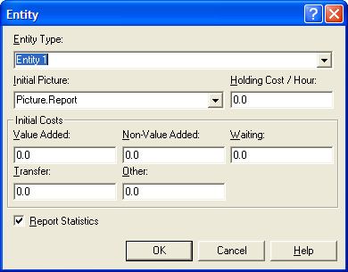
The advantage of using the Entity.Type attribute is that some automated functions become easier, such as collecting statistics by entity type (via the DISPOSE module), activity based costing, and displaying the entity picture. Using the Entity.Type attribute makes it a little more difficult to randomly assign an entity type to an entity, although this can still be done using the set concept, which will be discussed in a later chapter.
By using a user defined attribute, you can change and interpret the attribute very easily by mapping a number to the type as was done in Table 2.15.
Now that a basic understanding of the concept of an entity attribute has been developed, you still need to know how to declare and use the attributes. The declaration and use of attributes in is similar to how variables can be declared and used in Visual Basic. Unless you have the Option Explicit keyword specified for Visual Basic, any variables can be declared upon their first use. For attributes in this also occurs. For example, to make an attribute called myArea available simply use it in a module, such as an ASSIGN module. This does cause difficulties in debugging. It is also recommended that you adopt a naming convention for your attributes. This text uses the convention of placing “my” in front of the name of the attribute, as in myArea. This little mnemonic indicates that the attribute belongs to the entity. In addition, spaces within the name are not used, and the convention of the concatenation and the capitalization of the words within the name is used. Of course, you are free to label your attributes whatever you desire as long as the names do not conflict with already existing attributes or keywords within Arena. Attributes can also be formally declared using the ATTRIBUTES module. This also allows the user to define attributes that are arrays. Using the ATTRIBUTEs module is the preferred method for defining attributes because comments can be provided for the attribute and pre-defining attributes facilitates their selection within drop down text fields or when using the expression builder. This approach tends to avoid annoying syntax errors.
2.6 Modeling a Simple Discrete-Event Dynamic System
This section presents how to model a system in which the state changes at discrete events in time as discussed in the previous section.
2.6.1 A Drive through Pharmacy
This example considers a small pharmacy that has a single line for waiting customers and only one pharmacist. Assume that customers arrive at a drive through pharmacy window according to a Poisson distribution with a mean of 10 per hour. The time that it takes the pharmacist to serve the customer is random and data has indicated that the time is well modeled with an exponential distribution with a mean of 3 minutes. Customers who arrive to the pharmacy are served in the order of arrival and enough space is available within the parking area of the adjacent grocery store to accommodate any waiting customers.
The drive through pharmacy system can be conceptualized as a single server waiting line system, where the server is the pharmacist. An idealized representation of this system is shown in Figure 2.28. If the pharmacist is busy serving a customer, then additional customers will wait in line. In such a situation, management might be interested in how long customers wait in line, before being served by the pharmacist. In addition, management might want to predict if the number of waiting cars will be large. Finally, they might want to estimate the utilization of the pharmacist in order to ensure that the pharmacist is not too busy.
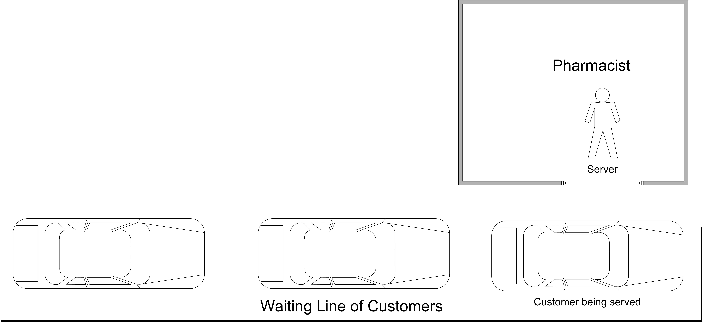
2.6.2 Modeling the System
Process modeling is predicated on modeling the process flow of “entities" through a system. Thus, the first question to ask is: What is the system? In this situation, the system is the pharmacist and the potential customers as idealized in Figure 2.28. Now you should consider the entities of the system. An entity is a conceptual thing of importance that flows through a system potentially using the resources of the system. Therefore, one of the first questions to ask when developing a model is: What are the entities? In this situation, the entities are the customers that need to use the pharmacy. This is because customers are discrete things that enter the system, flow through the system, and then depart the system.
Since entities often use things as they flow through the system, a natural question is to ask: What are the resources that are used by the entities? A resource is something that is used by the entities and that may constrain the flow of the entities within the system. Another way to think of resources is to think of the things that provide service in the system. In this situation, the entities “use” the pharmacist in order to get their medicine. Thus, the pharmacist can be modeled as a resource.
Since we are modeling the process flows of the entities through a system, it is natural to ask: What are the process flows? In answering this question, it is conceptually useful to pretend that you are an entity and to ask: What to I do? In this situation, you can pretend that you are a pharmacy customer. What does a customer do? Arrive, get served, and leave. As you can see, initial modeling involves identifying the elements of the system and what those elements do. The next step in building a simulation model is to enhance your conceptual understanding of the system through conceptual modeling. For this simple system, very useful conceptual model has already been given in Figure 2.28. As you proceed through this text, you will learn other conceptual model building techniques. From the conceptual modeling, you might proceed to more logical modeling in preparation for using . A useful logical modeling tool is to develop pseudo-code for the situation. Here is some potential pseudo-code for this situation.
Create customers according to Poisson arrival process
Process the customers through the pharmacy
Dispose of the customers as they leave the system
The pseudo-code represents the logical flow of an entity (customer) through the drive through pharmacy: Arrive (create), get served (process), leave (dispose).
Another useful conceptual modeling tool is the activity diagram. An activity is an operation that takes time to complete. An activity is associated with the state of an object over an interval of time. Activities are defined by the occurrence of two events which represent the activity’s beginning time and ending time and mark the entrance and exit of the state associated with the activity. An activity diagram is a pictorial representation of the process (steps of activities) for an entity and its interaction with resources while within the system. If the entity is a temporary entity (i.e. it flows through the system) the activity diagram is called an activity flow diagram. If the entity is permanent (i.e. it remains in the system throughout its life) the activity diagram is called an activity cycle diagram. The notation of an activity diagram is very simple, and can be augmented as needed to explain additional concepts:
- Queues
-
shown as a circle with queue labeled inside
- Activities
-
shown as a rectangle with appropriate label inside
- Resources
-
shown as small circles with resource labeled inside
- Lines/arcs
-
indicating flow (precedence ordering) for engagement of entities in activities or for obtaining resources. Dotted lines are used to indicate the seizing and releasing of resources.
- zigzag lines
-
indicate the creation or destruction of entities
Activity diagrams are especially useful for illustrating how entities interact with resources. Activity diagrams are easy to build by hand and serve as a useful communication mechanism. Since they have a simple set of symbols, it is easy to use an activity diagram to communicate with people who have little simulation background. Activity diagrams are an excellent mechanism to document your conceptual model of the system before building the model in .
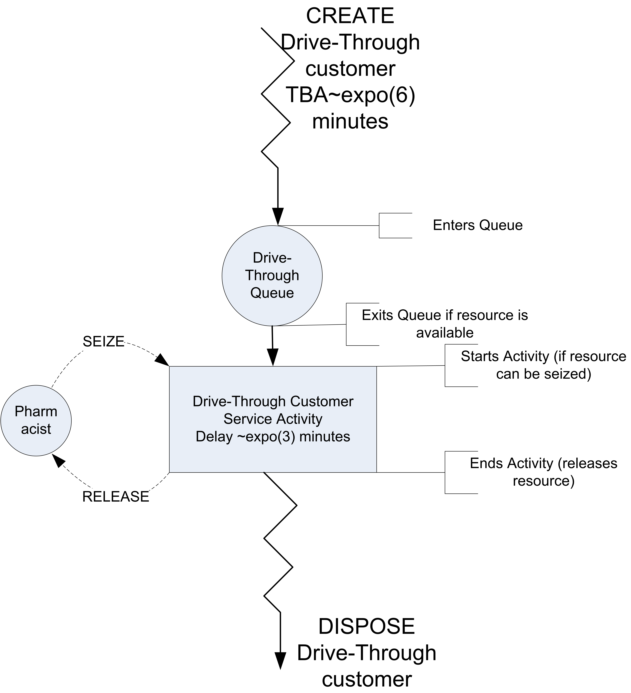
Figure 2.29 shows the activity diagram for the pharmacy situation. This diagram was built using Visio software and the drawing is available with the supplemental files for this chapter. You can use this drawing to copy and paste from, in order to form other activity diagrams, but I recommend just drawing activity diagrams free-hand.
An activity diagram describes the life of an entity within the system. The zigzag lines at the top of the diagram indicate the creation of an entity. While not necessary, the diagram has been augmented with like pseudo-code to represent the CREATE statement. Consider following the life of the customer through the pharmacy. Following the direction of the arrows, the customers are first created and then enter the queue. Notice that the diagram clearly shows that there is a queue for the drive-through customers. You should think of the entity flowing through the diagram. As it flows through the queue, the customer attempts to start an activity. In this case, the activity requires a resource. The pharmacist is shown as a resource (circle) next to the rectangle that represents the service activity.
The customer requires the resource in order to start its service activity. This is indicated by the dashed arrow from the pharmacist (resource) to the top of the service activity rectangle. If the customer does not get the resource, they wait in the queue. Once they receive the number of units of the resource requested, they proceed with the activity. The activity represents a delay of time and in this case the resource is used throughout the delay. After the activity is completed, the customer releases the pharmacist (resource). This is indicated by another dashed arrow, with the direction indicating that the resource is “being put back" or released. After the customer completes its service activity, the customer leaves the system. This is indicated with the zigzag lines going to no-where and augmented with the keyword DISPOSE. The dashed arrows of a typical activity diagram have also been augmented with the like pseudo-code of SEIZE and RELEASE. The conceptual model of this system can be summarized as follows:
- System
-
The system has a pharmacist that acts as a resource, customers that act as entities, and a queue to hold the waiting customers. The state of the system includes the number of customers in the system, in the queue, and in service.
- Events
-
Arrivals of customers to the system, which occur within an inter-event time that is exponentially distributed with a mean of 6 minutes.
- Activities
-
The service time of the customers are exponentially distributed with a mean of 3 minutes.
- Conditional delays
-
A conditional delay occurs when an entity has to wait for a condition to occur in order to proceed. In this system, the customer may have to wait in a queue until the pharmacist becomes available.
With an activity diagram and pseudo-code such as this available to represent a solid conceptual understanding of the system, you can begin the model development process.
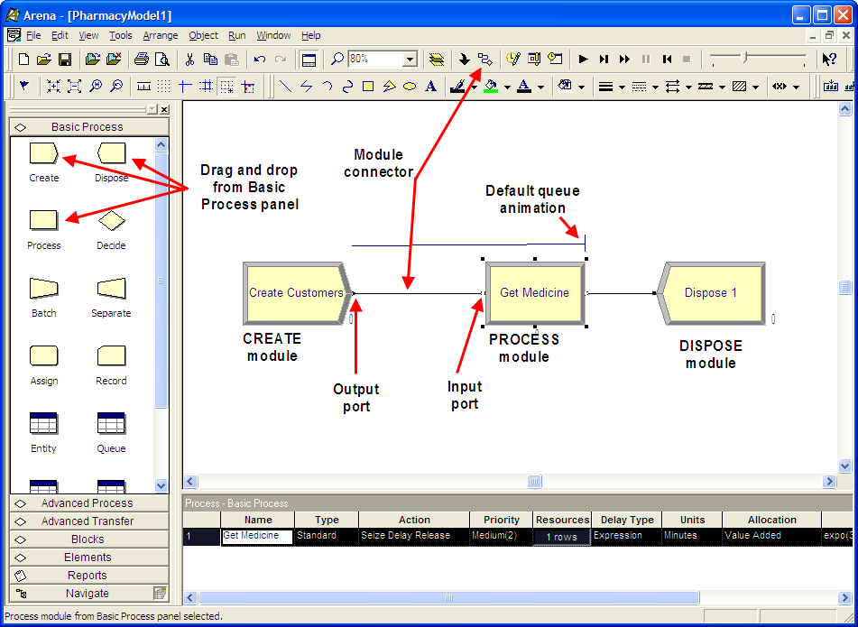
2.6.3 Pharmacy Model Implementation
Now, you are ready to implement the conceptual model. If you haven’t already done so, open up the Arena Environment. Using the Basic Process Panel template, drag the CREATE, PROCESS, and DISPOSE modules into the model window and make sure that they are connected as shown in Figure 2.30. In order to drag and drop the modules, simply select the module within the Basic Process template and drag the module into the model window, letting go of the mouse when you have positioned the module in the desired location. If the module within the model window is highlighted (selected), the next dragged module will automatically be connected. If you placed the modules and they weren’t automatically connected, then you can use the connect toolbar icon. Select the icon and then select the “from" module near the connection exit point and then holding the mouse button down drag to form a connection line to the entry point of the”to" module. The names of the modules will not match what is shown in the figure. You will name the modules as you fill out their dialog boxes.
2.6.4 Specify the Arrival Process
Within Arena nothing happens unless entities enter the model. This is done through the use of the CREATE module. Actually, this statement is not quite true and not quite false. You don’t necessarily have to have a CREATE module in the model to get things to happen, but this requires the use of advanced techniques that are beyond the scope of this book. In the current example, pharmacy customers arrive according to a Poisson process with a mean of \(\lambda\) = 10 per hour. According to probability theory, this implies that the time between arrivals is exponentially distributed with a mean of (\(1/\lambda\)). Thus, for this situation, the mean time between arrivals is 6 minutes.
\[ \frac{1}{\lambda} = \frac{\text{1 hour}}{\text{10 customers}} \times \frac{\text{60 minutes}}{\text{1 hour}} = \frac{\text{6 minutes}}{\text{customer}} \tag{2.6}\]
Warning
Do not make the mistake of using the arrival rate within the CREATE module The CREATE module uses the time between arrivals. Convert your arrival rate to the time between arrivals as shown in Equation 2.6.
Open up the CREATE module (by double clicking on it) and fill it in as shown in Figure 2.31. The distribution for the “Time Between Arrivals” is by default Exponential, Random (expo) in the figure. In this instance, the “Value" textbox refers to the mean time between arrivals.”Entities per Arrival” specifies how many customers arrive at each arrival. Since more than one customer does not arrive at a time, the value is set to 1. “Max Arrivals” specifies the total number of arrival events that will occur for the CREATE module. This is set at the default “Infinite” since a fixed number of customers to arrive is not specified for this example. The “First Creation” specifies the time of the first arrival event. Technically, the time to the first event for a Poisson arrival process is exponentially distributed. Hence, expo(6) has been used with the appropriate mean time, where expo(mean) is a function within that generates random variables according to the exponential distribution function with the supplied mean.
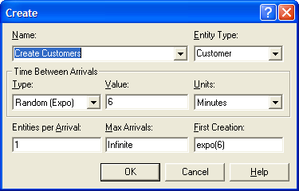
Make sure that you specify the units for time as minutes and be sure to press OK; otherwise, your work within the module will be lost. In addition, as you build models you never know what could go wrong; therefore, you should save your models often as you proceed through the model building process. Take the opportunity to save your model before proceeding.
Before proceeding there is one last thing that you should do related to the entities. Since the customers drive cars, you will change the picture associated with the customer entity that was defined in the CREATE module. To do this you will use the ENTITY module within the Basic Process panel. The ENTITY module is a data module. A data module cannot be dragged and dropped into the model window. Data modules require the model builder to enter information in either the spreadsheet window or in a dialog box. To see the dialog box, select the row from the spreadsheet view, right-click and choose the edit via dialog option. You will use the spreadsheet view here. Select the ENTITY module in the Basic Process panel and use the corresponding spreadsheet view to select the picture for the entity as shown in Figure 2.32.
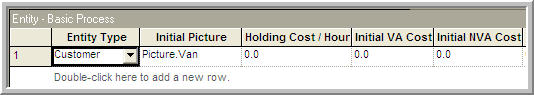
2.6.5 Specifying the Resources
Go to the Basic Process Panel and select the RESOURCE module. This module is also a data module. As you selected the RESOURCE module, the data sheet window (Figure 2.33) should have changed to reflect this selection. Double-click on the row in the spreadsheet module for the RESOURCE module to add a resource to the model.
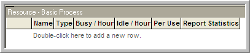
After the resource row has been added, select the row and right-click. This will bring up a context menu. From this context menu, select edit via dialog box. Make the resulting dialog box look like Figure 2.34 You can also type in the same information that you typed in the dialog box from within the spreadsheet view. This defines a resource that can be used in the model. The resource’s name is Pharmacist and it has a capacity of one. Now, you have to indicate how the customers will use this resource within a process.
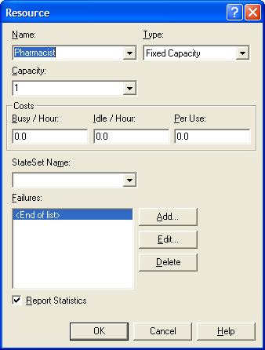
2.6.6 Specify the Process
A process can be thought of as a set of activities experienced by an entity. There are two basic ways in which processing can occur: resource constrained and resource unconstrained. In the current situation, because there is only one pharmacist and the customer will need to wait if the pharmacist is busy, the situation is resource constrained. A PROCESS module provides for the basic modeling of processes within an model. You specify this within a PROCESS module by having the entity seize the resource for the specified usage time. After the usage time has elapsed, you specify that the resource is released. The basic pseudo-code can now be modified to capture this concept as illustrated in the following pseudo-code.
CREATE customers with EXPO(6) time between arrivals
SEIZE 1 pharmacist
DELAY for EXPO(3) minutes
RELEASE 1 pharmacist
DISPOSE customerOpen up the PROCESS module and fill it out as indicated in Figure 1.23. Change the “Action” drop down dialog box to the (Seize, Delay, Release) option. Use the “Add” button within the “Resources” area to indicate which resources the customer will use. In the pop up Resources dialog, indicate the name of the resource and the number of units desired by the customer. Within the “Delay Type” area, choose Expression as the type of delay and type in expo(3) as the expression. This indicates that the delay, which represents the service time, will be randomly distributed according to an exponential distribution with a mean of 3 minutes. Make sure to change the units accordingly. When a PROCESS module uses the (Seize, Delay, Release) option, Arena automatically translates this to individual SEIZE, DELAY, and RELEASE modules, just like outlined in the pseudo-code. These modules (SEIZE, DELAY, RELEASE) are executed individually as the entities experience the process. It is very useful to understand what happens when these modules are executed.
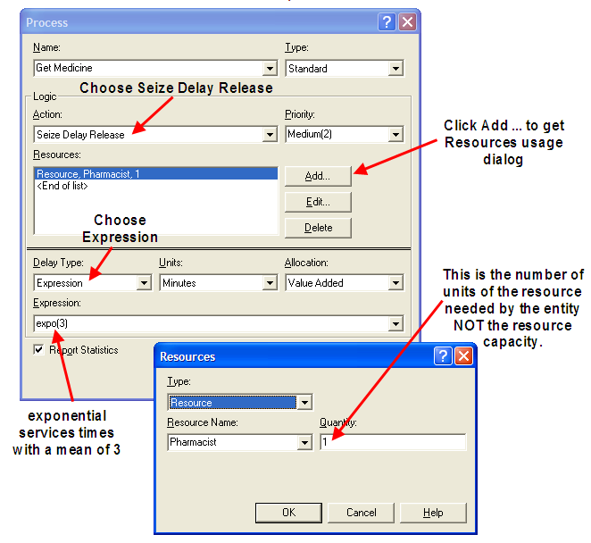
When an entity seizes a resource, the number of units available of the resource’s capacity is (automatically) checked against the amount of units requested by the entity. There is a global variable (function) defined for each resource called, NR(Resource ID), that returns the number of units of the resource that have been allocated to entity requests. For example, suppose a resource called, rBankTeller, has capacity, 3, and one of the 3 units (tellers) has already been allocated to a customer for use. That is, one of the tellers is currently serving a customer. In this case, NR(rBankTeller), will have the value 1. There is also a global variable (function) called MR(Resource ID) that holds the number of units of capacity defined for the resource. In this example, MR(rBankTeller) has the value 3. In the drive through pharmacy example the value of MR() is 1. Again, MR() holds the current capacity of the resource. Obviously, resources can have capacity value of various amounts.
The number of available units of the resource is always the difference, MR(Resource ID) - NR(Resource ID). In this bank example, the value of MR(rBankTeller) - NR(rBankTeller) is currently 2 (3 - 1 = 2) because a customer is in service. Thus, an arriving customer that wants one teller will not have to wait in the queue associated with the SEIZE module and will be immediately allocated one of the available tellers. The value of NR(rBankTeller) will be incremented by 1 unit and the number of available units, MR(rBankTeller) - NR(rBankTeller), will decrease by 1. If an entity requests more than the current number of available units of the resource, the entity will be automatically placed in the queue associated with the SEIZE module.
The units of a resource that have been allocated to an entity by a successful SEIZE will remain allocated to that entity until those units are released via a RELEASE module. An entity can release 1 or more units of the allocated resource when executing a RELEASE module. When an entity executes a RELEASE module the allocated units of the resource are given back to the resource and NR(Resource ID) is decremented by the amount released. When the units of the resource are released, the queue associated with the seize (with the highest seize priority) is checked to see if any entities are waiting and if so, those entities are processed to check if their number of units requested of the resource can be allocated. The processing of the queue is based on the queue processing rule (e.g. FIFO (first in, first out), LIFO (last in, first out), random, and priority ranking).
Suppose that a resource has capacity of 1 unit. If there are 2 processes (or seizes) that seize the same resource and entities are waiting in separate queues, the entity that activated the seize with the highest priority will get the resource first. If both seize requests have the same priority, then the entity that activated its seize first will go first (first come first served). The priority field for the seize controls the priority of the seize. It can be anything that evaluates to a number. A resource is considered busy if at least 1 unit of its capacity has been allocated. A resource is considered idle when all units are idle and the resource is not failed or inactive. The failed and inactive states of resources are discussed in Section 6.2.
Note
A common misunderstanding by novice modelers is to think that they must continually check MR(Resource ID) - NR(Resource ID) to see if the resource is available. Do not think this way. The purpose of the SEIZE and RELEASE constructs is to manage the allocation and deallocation of resource units. While there can be legitimate reasons for using the values of NR(Resource ID) and MR(Resource ID) within a model, you should not make the mistake of polling resources for availability. The resource allocation process is done automatically using SEIZE and RELEASE. If you do not like how the resource units are being allocated, then you should use more advanced concepts as discussed in Chapter 6.
Now we are ready to specify how to execute the pharmacy model.
2.6.7 Specify Run Parameters
Let’s assume that the pharmacy is open 24 hours a day, 7 days a week. In other words, it is always open. In addition, assume that the arrival process does not vary with respect to time. Finally, assume that management is interested in understanding the long term behavior of this system in terms of the average waiting time of customers, the average number of customers, and the utilization of the pharmacist. This kind of simulation is called an infinite horizon simulation and will be discussed in more detail in Chapter 5.
To simulate this situation over time, you must specify how long to run the model. Ideally, since management is interested in long run performance, you should run the model for an infinite amount of time to get long term performance; however, you probably don’t want to wait that long! For the sake of simplicity, assume that 10,000 hours of operation is long enough. Within the environment, go to the Run menu item and choose Setup. After the Setup dialog box appears, select the Replication parameters tab and fill it out as shown in Figure 2.36. The Replication Length text box specifies how long the simulation will run. Notice that the base time units were changed to minutes. This ensures that information reported by the model is converted to minutes in the output reports.
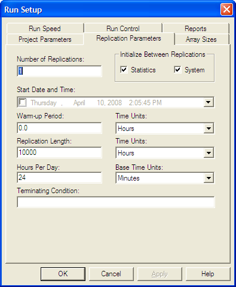
The fully completed model is available within this chapter’s files as file, PharmacyModel.doe.
Now, the model is ready to be executed. You can use the Run menu to do this or you can use the convenient “VCR" like run toolbar (Figure 2.37). The Run button causes the simulation to run until the stopping condition is met. The Fast Forward button runs the simulation without animation until the stopping condition is met. The Pause button suspends the simulation run. The Start Over button stops the run and starts the simulation again. The Stop button causes the simulation to stop. The animation slider causes the animation to slow down (to the left) or speed up (to the right).
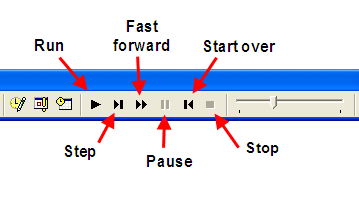
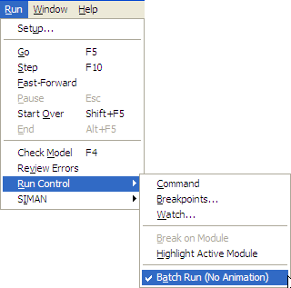
When you run the model, you will see the animation related to the customers waiting in line. Because the length of this run is very long, you should use the fast forward button on the “VCR" run toolbar to execute the model to completion without the animation. Instead of using the fast forward button, you can significantly speed up the execution of your model by running the model in batch mode without animation. To do this, you can use the Run menu as shown in Figure 2.38 and then when you use the VCR Run button the model will run much faster without animation.
2.6.8 Analyze the Results
After running the model, you will see a dialog (Figure 2.39) indicating that the simulation run is completed and that the simulation results are ready. Answer yes to open up the report viewer.
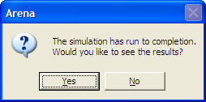
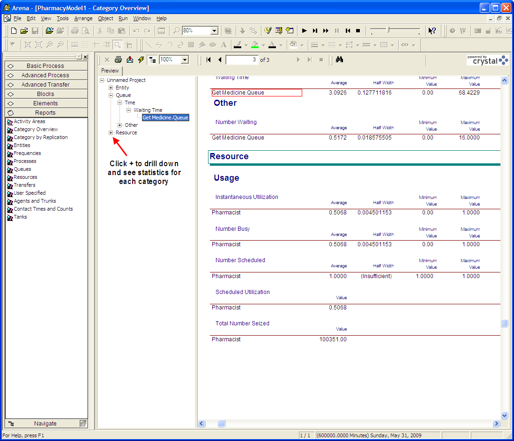
In the reports preview area, you can drill down to see the statistics that you need. Go ahead and do this so that you have the report window as indicated in Figure 2.40. The reports indicate that customers wait about 3 minutes on average in the line. reports the average of the waiting times in the queue as well as the associated 95% confidence interval half-width. In addition, reports the minimum and maximum of the observed values. These results indicate that the maximum a customer waited to get service was 16 minutes. The utilization of the pharmacist is about 50%. This means that about 50% of the time the pharmacist was busy. For this type of system, this is probably not a bad utilization, considering that the pharmacist probably has other in-store duties. The reports also indicate that there was less than one customer on average waiting for service. Using the Reports panel in the Project Bar you can also select specific reports.
also produces a text-based version of these reports in the directory associated with the model. Within the Windows File Explorer, select the modelname.out file, see Figure 1.30. This file can be read with any text editor such as Notepad, see Figure 2.41.
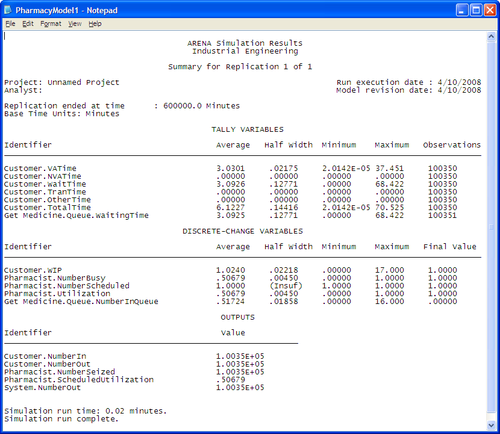
Also as indicated in Figure 2.42, Arena generates additional files when you run the model. The modelname.accdb file is a Microsoft Access database that holds the information displayed by the report writer. The modelname.p file is generated when the model is checked or run. If you have errors or warnings when you check your model, the error file will also show up in the directory of your modelname.doe file
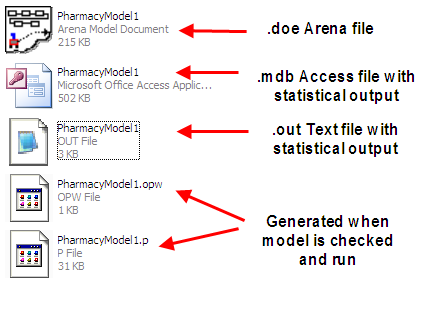
This single server waiting line system is a very common situation in practice. In fact, this exact situation has been studied mathematically through a branch of operations research called queuing theory. As will be covered in Appendix C for specific modeling situations, formulas for the long term performance of queuing systems can be derived. This particular pharmacy model happens to be an example of an M/M/1 queuing model. The first M stands for Markov arrivals, the second M stands for Markov service times, and the 1 represents a single server. Markov was a famous mathematician who examined the exponential distribution and its properties. According to queuing theory, the expected number of customer in queue, \(L_q\), for the M/M/1 model is:
\[ \begin{aligned} L_q & = \dfrac{\rho^2}{1 - \rho} \\ \rho & = \lambda/\mu \\ \lambda & = \text{arrival rate to queue} \\ \mu & = \text{service rate} \end{aligned} \tag{2.7}\]
In addition, the expected waiting time in queue is given by \(W_q = L_q/\lambda\). In the pharmacy model, \(\lambda\) = 1/6, i.e. 1 customer every 6 minutes on average, and \(\mu\) = 1/3, i.e. 1 customer every 3 minutes on average. The quantity, \(\rho\), is called the utilization of the server. Using these values in the formulas for \(L_q\) and \(W_q\) results in:
\[ \begin{aligned} \rho & = 0.5 \\ L_q & = \dfrac{0.5 \times 0.5}{1 - 0.5} = 0.5 \\ W_q & = \dfrac{0.5}{1/6} = 3 \: \text{minutes} \end{aligned} \]
In comparing these analytical results with the simulation results, you can see that they match to within statistical error. Later in this text, the analytical treatment of queues and the simulation of queues will be developed. These analytical results are available for this special case because the arrival and service distributions are exponential; however, simple analytical results are not available for many common distributions, e.g. lognormal. With simulation, you can easily estimate the above quantities as well as many other performance measures of interest for wide ranging queuing situations. For example, through simulation you can easily estimate the chance that there are 3 or more cars waiting.
2.7 Extending the Drive Through Pharmacy Model
The drive through pharmacy model presents a very simple process for the customer: enter, get served, and depart. To make the model a little more realistic consider that a customer my decide not to wait in line if there is a long line of waiting customers. Let’s assume that if there are four or more customers in the line when a customer arrives that they decide to go to different pharmacy. To model this situation we need to be able to direct the customer along different paths in the model. This can be accomplished using the DECIDE module. The DECIDE module shown in Figure 2.43 has one input port and possibly two or more output ports. Thus, an entity that enters in the input port side of the DECIDE module can take different paths out of the module. The path can be chosen based on a condition or set of conditions, or based on a probability distribution.
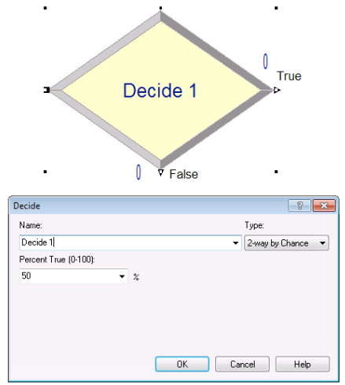
To model the situation that an arriving pharmacy customer may decide to go to a different pharmacy, we need to use a condition within the DECIDE module. The decision to go to a different pharmacy depends upon how many customers are in the waiting line. Thus, we need a method to determine how many customers are in the pharmacy queue at any time. This can be accomplished using the NQ(queue name) function. The NQ(queue name) function returns the number of entities being held in the named queue. In the model, the queue that holds the customers is call Get Medicine.Queue. The name of the queue for a PROCESS module takes on the name of the PROCESS module with the word Queue appended. Therefore, the following condition can be used to test whether or not the arriving customer should go somewhere else is: NQ(Get Medicine.Queue) <= 3. The following pseudo-code illustrates these ideas.
CREATE customers with EXPO(6) time between arrivals
DECIDE IF NQ(Get Medicine.Queue) <= 3 customers
SEIZE 1 pharmacist
DELAY for EXPO(3) minutes
RELEASE 1 pharmacist
DISPOSE customerBased on this pseudo-code, the customer only enters the PROCESS module if there are 3 or less cars waiting in line. The overall model is illustrated in Figure 2.44. Notice that there are now two DISPOSE modules, one for customers who do not enter (balk) and one for those that enter and complete service. Figure 2.45 shows the use of the NQ() function to chose the correct path.
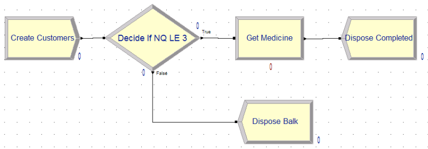
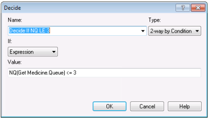
Running the model using the same conditions as before results less waiting and utilization as show in Figure 2.46. This is because less customers enter the system. In the next chapter, we will learn how to quantify the probability of losing customers due to long lines.
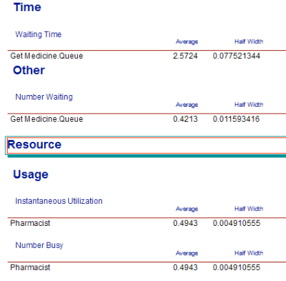
2.8 Animating the Drive Through Pharmacy Model
While running the pharmacy model with the animation on, you saw some of Arena’s basic animation capabilities. Positioned over the PROCESS module is an animation queue, which shows the cars that are waiting for the pharmacist. has many other animation features that can be added to a model. Animation is important for helping to verify that the model is working as intended and for validating the model’s representation of the real system. This section will illustrate a few of Arena’s simpler animation features by having you augment the basic pharmacy model. In particular, you will change the entity picture from a van to a car, draw the pharmacy building, and show the state of the pharmacist (idle or busy). You will also animate the number of cars waiting in the line (both visually and numerically).
When defining the entity type, a picture of a van was originally selected for the entity. has a number of other predefined graphical pictures that can be used within the model. The available entity pictures can be found from the Edit menu as shown in Figure 2.47. You can select different picture files by navigating to where they are installed within your Arena installation. See Figure 2.48 This may vary by installation. For example, the picture library can be found at the following location in my installation C:\Users\Public\Documents\Rockwell Software\Arena\PictureLibraries.
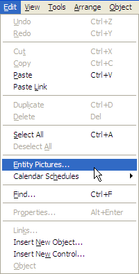
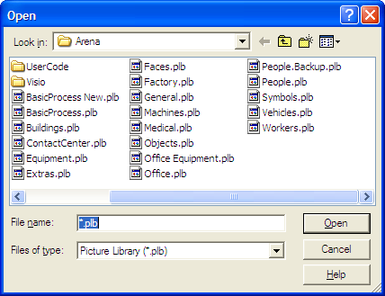
Once you have selected Edit \(>\) Entity Pictures, you should see the entity picture placement dialog as shown in Figure 2.49. The entity picture placement dialog is divided into two functions: the picture list (on the left of dialog) and the picture library (on the right of the dialog). The picture list represents the entity pictures that are listed in the ENTITY module. If you scroll down you will find the picture of the van in the list. By navigating to the picture libraries within the distribution folder on your hard-drive (see Figure 2.48 you can select the Vehicles.plb file. When selected as the current library, your entity picture placement dialog should look as shown in Figure 2.49.
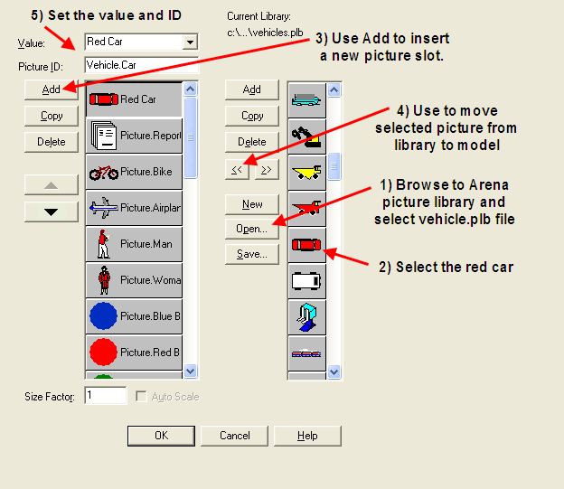
Scroll down in the vehicle library and select the red car, then select the “\(<<\)” button to move the picture to the picture list. Finally, you should give the picture a name in the list (e.g. Red Car). Now, go back to the ENTITY module and associate the picture with your entity. At the time of this writing, the name does not appear on the Entity module drop down list, but the picture is available. Just type in the correct name in the Entity module to have the entity picture represented by the red car.
Now, you will use Arena’s drawing tools to draw the outline of the pharmacy building. has standard drawing tools (e.g. lines, rectangles, polygons, etc) as well as way to add text, fill options etc. These tools are available through the Drawing toolbar as shown in Figure 2.50. You can also turn on the drawing grid and the ruler, which are useful in placing the drawing objects. In this situation, drawing will be kept to a rather simple/crude representation of the pharmacy. Essentially, the pharmacy will be represented as a box, the drive through lane as a line with the road line pattern, and the pass through service window as two lines with 3pt thickness.
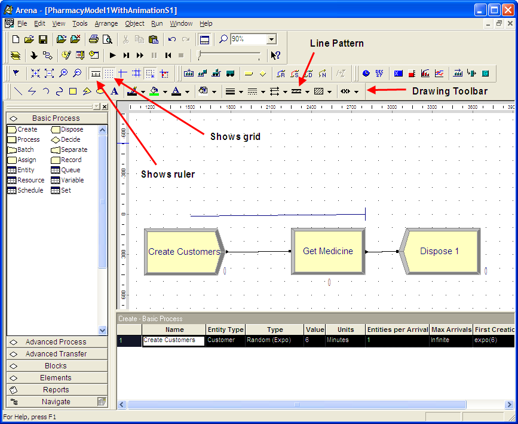
Figure 2.51 illustrates the background drawing for the pharmacy. The drawing editor works like most computer based drawing editors. You should just drag and drop the items, set the fill options, thickness, and line pattern as you go. This portion of this example is available in the PharmacyModelWithAnimationS1.doe file.
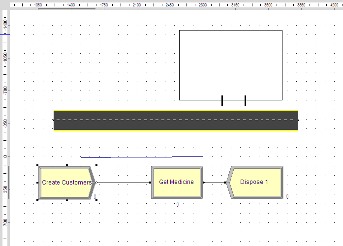
In the next part of the example, you will animate the resource so that you can see when the pharmacist is busy or idle, provide a location to show the customer currently being served, and better represent the waiting cars in the drawing.
Within a resource can be in one of four default states (idle, busy, inactive, and failed). The inactive and failed states will be discussed later in the text. The idle state represents the situation that at least 1 unit of the resource is available. In the pharmacy model, there is only 1 pharmacist, so if the pharmacist is not serving the customer, the pharmacist is considered idle. The busy state represents the situation where all available units of the resource are currently seized. In the case of the pharmacy model, since there is only 1 resource unit (the pharmacist), the resource is busy when the sole pharmacist is seized. In the animation, you will visibly represent the state of the pharmacist. This can be done through Arena’s animate toolbar and in particular the animate resource button.
Click the Resource button on the Animate toolbar.
The Resource Placement dialog box appears. Use the open button to navigate to the people.plb picture library.
Select the over head person view picture from the library’s list of pictures, see Figure 2.52 Then, select the Copy button. This will cause a copy of the picture to be made in the library.
After copying the picture, double-click on the picture. This will put you in the resource editor. This is like a drawing editor. For simplicity, just select the picture and change the fill color to green. If you want to make it look just like the picture in the text, you need to un-group the picture elements and change their appearance as necessary.
Assign the white over head person view picture to the idle state and the green picture that was just made to the busy state. To change the idle picture: Click the Idle button in the table on the left. Select from the picture library table on the right the picture of the white over head view person picture. Click the Transfer button between the tables to use the picture for the Idle resource state. To change the busy picture: Click the Busy button in the table on the left. Select from the picture library table on the right the picture of green worker that was just made. Click the Transfer button between the tables to use the selected picture when the pharmacist is busy.
Now you need to rotate the picture so that the person is facing down. Double-click on the new Idle resource picture to open the resource editor. Then, you should select the whole picture and choose Arrange \(>\) Rotate in order to rotate the picture so that the pharmacist is facing down. Close the editor and do this for the Busy state also.
Click on the Seize Area check box. This will be discussed shortly.
Click OK to close the dialog box. (All other fields can be left with their default values.) will ask about whether you want to save the changes to picture library. If you want to keep the green over head view person for use in later models, answer yes during the saving process. The cursor will appear as a cross hair. Move it to the model window and click to place the pharmacist resource animation picture within the pharmacy.
Now that the pharmacist is placed in the pharmacy, it would be nice to show the pharmacist serving the current customer. This can be done by using the seize area for a resource. The seize area animates the entities that have seized the resource. By default the seize area is not shown on the animation of a resource. The checking of the Seize Area check box allows the seize area to be visible. After placing the resource, zoom in on the resource and notice a small double circle. This is the seize area. Select the seize area and drag it so that it is positioned in the road adjacent to the pharmacy.
Now, you need to place the queue of waiting cars on the road. Select the animation queue on top of the Get Medicine PROCESS module and delete it. Now, go to the Queue button on the Animate toolbar and select it. This will allow you to create a new queue animation element that is not physically attached to the Get Medicine PROCESS module and place it in the road. Fill in the Queue animation dialog as shown in Figure 2.53. Once you press OK, the cursor will turn in to a cross-hair and allow you to place the animation queue.
The final piece of animation that you will perform is to show the current number of waiting cars within the pharmacy. Select the Variable button on the Animate toolbar and fill out the resulting dialog as per Figure 2.54. The cursor should turn to cross-hairs and you should place the variable animation inside the pharmacy as shown in Figure 2.55.
The last thing to do before running the animation will be to turn off the animation associated with the flow chart connectors. This will stop the animation of the customers within the flow chart modules and be less of a distraction. The Object menu contains the option to disable/enable the animation of the connectors as shown in Figure 2.56.
The final version of the animated pharmacy model is available in the file, PharmacyModleWithAnimationS2.doe. If you run the model with the animation on, you will see the pharmacist indicated as busy or idle, the car currently in service, any cars lined up waiting, and the current number of cars waiting as part of the animation.
Note
How can I animate a resource that has capacity > 1 This question is commonly asked because you want to show each unit of the resource being busy. Unfortunately, this isn not easy to do because a resource is considered busy if at least 1 unit of its capacity is busy. You could animate the NR(resource name) variable, see Section 6.2, to show how many are busy (either numerically or with a level animation). Also, by showing the seize point and adding multiple points you can show each entity as it is using the resource. There is also something called a storage, see Section 4.1.4, which will do just about the same thing. You can also animate 1-D variable by having the variable indicate whether each unit is busy or not. All of these methods are illustrated in the attached Arena model. This should approximate what you are trying to do. The variable method is probably the best but takes the most work. If you are going to use the variable method, then you might just look at using a resource set instead. If you want to use a resource animation and show each separately, then you need to define a different resource to represent each unit of the overall resource, put them in a set and seize/delay/release from the set. Then, you can animate each of the individual resources in the standard manner. Please see the Arena file, ResourceAnimations.doe that accompanies this chapter’s files for an example.
Animation is an important part of the simulation process. It is extremely useful for showing to decision makers and experts to explain and ensure that the model is accepted. With this example, you have actually learned a great deal about animating a model. One of the standard practices is to rely on the default animation that is available with the flow chart modules. Then, when animation is important for validation and for convincing decision makers, the simulation analyst can devote time to making the animation more worthy. Often, the animation is developed in one area of the model which can be easily accessed via the Navigate bar. Many detailed examples of what is possible with animation come as demo models with the distribution. For example, you should explore the models in the Examples folder (e.g. FlexibleManufacturing.doe). If you find that the drawing tools are limiting, then you can use other drawing programs to make the drawings and import them as background for your model. Arena also has the capability for developing 3D animation; however, this is not discussed in this text.
The first part of this text primarily uses the default animation that comes with the placement of flow chart modules and concentrates on the analysis of simulation models; however, Chapter 7 returns to more on the topic of animation, when material handling constructs (e.g. conveyors and transporters) are examined.
2.9 Attributes, Variables, and Some I/O
In this section, we will dig deeper into the concepts of attributes and variables. In addition, an introduction to some additional statistical collection will be discussed. Finally, we will see how to write data to a file. To illustrate these concepts, we will expand upon the pharmacy model.
2.9.1 Modifying the Pharmacy Model
Suppose that customers who arrive to the pharmacy have either 1, 2, or 3 prescriptions to be filled. There is a 50% chance that they have 1 prescription to fill, a 30% chance that they have 2 prescriptions to fill, and a 20% chance that they have 3 prescriptions to fill. The time to service a customer is still exponentially distributed but the mean varies according to how many prescriptions that they need filled as shown in Table 2.16.
| # Prescription | Chance | Service Time Mean |
|---|---|---|
| 1 | 50% | 3 minutes |
| 2 | 30% | 4 minutes |
| 3 | 20% | 5 minutes |
For illustrative purposes, the current number of customers having 1, 2, or 3 prescriptions in system is needed within the animation of the model. In addition, the total number of prescriptions in the system should also be displayed. Statistics should be collected on the average number of prescriptions in the system and on the average time a customer spends in the system. For diagnostic purposes, the following information should be captured to a file:
When a customer arrives: The current simulation time, the entity number (IDENT), the entity’s serial number, the number of prescriptions for the customer
When a customer departs: The current simulation time, the entity number (IDENT), the entity’s serial number, the number of prescriptions for the customer, and the time of arrival, and the total time spent in the system
In addition to the above information, each of the above two cases should be denoted in the output. The simulation should be run for only 30 customers.
As we saw earlier in the chapter, you should follow a basic modeling recipe and address the following steps:
What is the system?
What are the elements of the system?
What information is known by the system?
What are the required performance measures?
What are the entity types?
What information must be recorded or remembered for each entity instance?
How are entities (entity instances) introduced into the system?
What are the resources that are used by the entity types?
- Which entity types use which resources and how?
What are the process flows? Sketch the process or make an activity flow diagram
Develop pseudo-code for the situation
Implement the model in Arena
By considering each of these questions in turn, you should have a good start in modeling the system.
In this example, the system is again the pharmacy and its waiting line. The system knows about the chance for each prescription amount, the inter-arrival time distribution, and the service time distributions with their means by prescription amount. The system must also keep track of how many prescriptions of each type are in the pharmacy and the total number of prescriptions in the pharmacy. The performance of the system will be measured by using the average number of prescriptions in the system and the average time a customer spends in the system. As in the previous model, the entity will be the customers. Each customer must know the number of prescriptions needed. As before, each customer requires a pharmacist to have their prescription filled. The activity diagram will be exactly the same as shown in Figure 2.29 because the activity and use of resources of the customer has not changed.
When implementing this model, the following modules will be used:
CREATE This module will be used to create the 30 customers
ASSIGN This module will be used to assign values to variables and attributes.
READ/WRITE This module will be used to write out the necessary information from the customers.
PROCESS This module will be used to implement the prescription filling activity with the required pharmacist.
RECORD This module will be used to record statistics on the system time of the customers
DISPOSE This module will be used to dispose of the entities that were created.
FILE This data module defines the characteristics of the operating system file used by the READ/WRITE module.
VARIABLE This data module will be used to define variables to track the number of customers having the different amounts of prescriptions and to track the total number of prescriptions.
ATTRIBUTE This data module will be used to define attributes associated with the customer.
Thus, the new modules are the READ/WRITE module, the FILE module, and the RECORD module.
To start the modeling, the variables and attributes necessary for the problem need to be understood. In the problem, the system needs to keep track of the total number of prescriptions and the number of customers that need 1, 2, or 3 prescriptions filled. Therefore, variables to keep track of each of these items are required. A scalar variable can be used to track the number of prescriptions (vNumPrescriptions) in the system and a 1-D variable (vNP) with 3 elements can be used to track the number of customers requiring each of the 3 prescription amounts.
In the example, each customer needs to know how many prescriptions that he/she needs to have filled. Therefore, the number of prescriptions (myNP) needs to be an entity attribute. In addition, the arrival time of each customer and the customer’s total time in the system must be written out to a file. Thus, each entity representing a customer must remember when it arrived to the pharmacy. Do real customers need to remember this information? No! However, the modeling requires this information. Thus, attributes (and variables) can be additional characteristics required by the modeler that are not necessarily part of the real system. Thus, the arrival time (myArriveTime) of each customer should be modeled as an entity attribute.
To understand why this information must be stored in an attribute consider what would happen if you tried to use a variable to store the number of prescriptions of the incoming customer. Entities move from one block to another during the simulation. In general, entities may delay their progress due to simulation logic. When this happens, other entities are allowed to move. If the number of prescriptions for a specific customer instance was stored in a (global) variable, then during the movement cycle of the other entities (customers), some other entity instance might change the value of the variable. Thus, the information concerning the current customer’s number of prescriptions would be over written by the next customer that enters the system. Thus, this information must be carried with the entity and not stored globally. Global variables are very useful for communicating information between entities; however, as in any programming language care must be taken to use them correctly.
Note
What is the difference between attributes and variables? The key difference is that a variable is global. A variable belongs to the system. Attributes are attached to an entity instance. Variables define a place in memory in which data can be stored. Since the memory is global to the model, any module or entity can read/write/use the value of the variable. Memory allocated to an attribute is stored in the entity table with the specific entity instance as discussed in Section 2.5.1. If you have experience with a programming language like Java, then Arena variables are like static class variable, which is shared by all instances of the class. Arena attributes are like Java fields of the class, which are attached only to the object instances.
The information in Table 2.16 also needs to be modeled. Does this information belong to the system or to each customer? While the information is about customers (in general), each customer does not need to “carry" this information. The information is really about how to create the customers. In other words, it is about the entity type not the entity instance. The system must know how to create the customers, thus this information belongs to the system. The number of prescriptions per customer can be modeled as a random variable with a discrete distribution. The information about the mean of the service time distributions can be kept in a 1-D variable with 3 elements representing the mean of each distribution. The basic pseudo-code for this situation is given in the following pseudo-code.
CREATE customers with EXPO(6) time between arrivals
BEGIN ASSIGN
myNP = DISC(0.5, 1, 0.8, 2, 1.0, 3)
vNumPrescriptions = vNumPrescriptions + myNP
vNP(myNP) = vNP(myNP) + 1
myArriveTime = TNOW //TNOW represents the current simulation time
END ASSIGN
WRITE customer arrival information to a file
BEGIN PROCESS
SEIZE 1 pharmacist
DELAY for EXPO(3) minutes
RELEASE 1 pharmacist
END PROCESS
RECORD (TNOW - myArriveTime)
WRITE customer departure information to a file
DISPOSE customerIn what follows, the previously developed pharmacy model will be used as a basis for making the necessary changes for this situation. If you want to follow along with the construction of the model, then make a copy of the pharmacy model of Section 2.6.2. You should start by defining the variables for the example. With your copy of the model open, go to the Basic Panel and select the VARIABLE data module and define the following variables:
vNumPrescriptionsThis scalar variable should count the total number of prescriptions in the system. This variable should be initialized at the value 0.0.vNPThis 1-D variable should have 3 rows and should count the number of customers having 1, 2, 3 prescriptions currently in the system. The index into the array is the prescription quantity. Each element of this variable should be initialized at the value 0.0.vServiceMeanThis 1-D variable should have 3 rows representing the mean of the service distributions for the 3 prescription quantities. The index into the array is the prescription quantity. The elements (1, 2, 3) of this variable should be initialized at the values 3, 4, 5 respectively.
Given the information concerning the variables, the variables can be defined as shown in Figure 2.57. For scalar variables, you can tell Arena to automatically report statistics on the time average value of the variable. Chapter 3 will more formally define time-average statistics, but for now you can think of them as computing the average value of the variable over time. The initial values can be easily defined using the spreadsheet view.
Now, you are ready to modify the modules from the previous model within the model window. The CREATE module is already in the model. In what follows, you will be inserting some modules between the CREATE module and the PROCESS module and inserting some modules between the PROCESS module and the DISPOSE module. You should select and delete the connector links between these modules. You should then drag an ASSIGN module from the Basic Process panel to the model window so that you can connect it to the CREATE module.
2.9.2 Using the ASSIGN Module
Because the ASSIGN module is directly connected to the CREATE module, each entity that is created will pass through the ASSIGN module causing each assignment statement to be executed in the order in which the assignments are listed in the module. The ASSIGN module simply represents a series of logical assignment, e.g. Let X = 2, as you would have in any common programming language. Figure 2.58 illustrates the dialog boxes associated with the ASSIGN module. Using the Add button, you can add a new assignment to the list of assignments for the module. Add an attribute named, myNP and assign it the value returned from DISC(0.5, 1, 0.8, 2, 1.0, 3).
The function DISC(\(cp_1, v_1, cp_2, v_2, \cdots, cp_n, v_n\)) will supply a random number according to a discrete probability function, where \(cp_i\) are cumulative probabilities and \(v_i\) is the value, i.e. \(P(X = v_i) = cp_{i+1} - cp_i\) with \(cp_0\) = 0 and \(cp_n\) = 1. The last cumulative value must be 1.0 since it must define a probability distribution. For this situation, there is a 50% chance of having 1 prescription, a (80 – 50 = 30%) chance for 2 prescriptions, and (100 – 80 = 20%) chance for 3 prescriptions.
The Expression Builder can be using to build complicated expressions by right-clicking in the text field and choosing Build Expression. Figure 2.59 illustrates the Expression Builder with the DISC distribution function and shows a list of available probability distributions. Once the number of prescriptions has been assigned to the incoming customer, you can update the variables that keep track of the number of customers with the given number of prescriptions and the total number of prescriptions. As an alternative to the dialog view of the ASSIGN module, you can use the spreadsheet view as illustrated in Figure 2.60.
You should complete your ASSIGN module as shown in Figure 2.60. The data sheet view of Figure 2.60 clearly shows the order of the assignments within the ASSIGN module. The order of the assignments is important! The first assign is to the attribute myNP. This attribute will have a value 1, 2, or 3 depending on the random draw caused by the DISC function. This value represents the current customer’s number of prescriptions and is used in the second assignment to increment the variable that represents the total number of prescriptions in the system. In the third assignment the attribute myNP is used to index into the variable array that counts the number of customers in the system with the given number of prescriptions. The fourth assignment uses the variable TNOW to assign the current simulation time to the attribute myArriveTime. TNOW holds the current simulation time. Thus, the attribute, myArriveTime will contain the value associated with TNOW when the customer arrived, so that when the customer departs the total elapsed time in the system can be computed. The last assignment is to a variable that will be used to denote the type of event 1 for arrival, 2 for departure when writing out the customer’s information.
2.9.3 Using the READWRITE Module
As with any programming language, has the ability to read and write information from files. Often the READWRITE module is left to the coverage of miscellaneous topics; however, in this section, the READWRITE module is introduced so that you can be aware that it is available and possibly use it when debugging your models. The READWRITE module is very useful for writing information from a simulation and for capturing values from the simulation, for post processing, and other analysis.
This example uses the READWRITE module to write out the arriving and departing customer’s information to a text file. The information can be used to trace the customer’s actions through time. There are better ways to trace entities with , but this example uses the READWRITE module so that you can gain an understanding of how processes entities. In order to use the READWRITE module, you must first define the file to which the data will be written. You do this by using the FILE data module in the Advanced Process panel. To get the FILE dialog, insert a row into the file area and then choose edit via dialog from the right click context menu. Open the FILE dialog and make it look like FILE module shown in Figure 2.61. This will define a file within the operating system to which data can be written or from which data can be read. Arena’s FILE module allows the user to work with text files, Excel files, Access files, as well as the other access types available in the Access Type drop down menu dialog. In this case, the Sequential option has been chosen, which indicates to that the file will be a text file for which the records will be in the same sequence that they were written. In addition, the Free Format option has been selected, which essentially writes each value to the file separated by a space. You should review the help file on the FILE module for additional information on the other access types.
Now, open the READWRITE module and make it look like the READ/WRITE module given in Figure 2.62. Use the drop down menu to select the file that you just defined and use the Add button to tell the module what data to write out. After selecting the Add button, you should use the Type drop-down to select the data type of the item that you want to write out to the file and the item to write out. For the data type Other, you must type in the name of the item to be written out (it will not be available in a drop down context). In this case, the following is being written to the file:
TNOWthe current simulation timevEventTypethe type of event 1 for arrival, 2 for departureIDENTthe entity identity number of the customerEntity.SerialNumberthe serial number of the customer entitymyNPthe number of prescriptions for the customer
This information is primarily about the current (active) entity. The active entity is the entity that is currently moving through the model’s modules. In addition to writing out information about the active entity or the state of the system, the READ/WRITE module is quite useful for reading in parameter values at the beginning of the simulation and for writing out statistical values at the end of a simulation.
After writing out the values to the file, the customer entity proceeds to the PROCESS module. Because the mean of the service time distribution depends on the number of prescriptions, we need to change the PROCESS module. In Figure 2.63, we use the 1-D array, vServiceMean, and the attribute, myNP, to select the appropriate mean for the exponential distribution in the PROCESS module. Remember that the attribute myNP has a value 1, 2, or 3 depending on the number of prescriptions for the customer. This value is used as the index into the vServiceMean 1-D variable to select the appropriate mean. Since has limited data structures, the ability to use arrays in this manner is quite common.
Now, that the customer has received service, you can update the variables that keep track of the number of prescriptions in the system and the number of customers having 1, 2, and 3 prescriptions. This can be done with an ASSIGN module placed after the PROCESS module. Figure 2.64 shows the assignments for after a customer completes service. The first assignment decrements the global variable, vNumPrescriptions, by the amount of prescriptions, myNP, denoted by the current customer. Then, this same attribute is used to index into the array that is counting the number of customers that have 1, 2, or 3 prescriptions to reduce the number by 1 since a customer of the designated type is leaving. In preparation for writing the departing customer’s information to the file, you should set the variable, vEventType, to 2 to designate a departure.
2.9.4 Using the RECORD Module
The problem states that the average time in the system must be computed. To do this, the RECORD module can be used. The RECORD module is found on the Basic Process panel. The RECORD module tabulates information each time an entity passes through it. The options include:
Count will increase or decrease the value of the named counter by the specified value.
Entity Statistics will generate general entity statistics, such as time and costing/duration information.
Time Interval will calculate and record the difference between a specified attribute’s value and the current simulation time.
Time Between will track and record the time between entities entering the module.
Expression will record the value of the specified expression.
Drag and drop the RECORD module after the previous ASSIGN module. Open the record module and make it look like the RECORD module shown in Figure 2.65. Make sure to choose the Expression option. The RECORD module evaluates the expression given in the Value text box field and passes the value to an internal function that automatically tallies statistics (min, max, average, standard deviation, count) on the value passed. Since the elapsed time in system is desired, the current time minus when the customer arrived must be computed. The results of the statistics will be shown on the default reports labeled with the name of the tally, e.g. SystemTime. The Time Interval option could also have been used by supplying the myArriveTime attribute. You should explore and try out this option to see that the two options produce the same results.
The final model change is to include another READWRITE module to write out the information about the departing customer. The READWRITE module also has a spreadsheet view for assigning the information that is to be read in or written out. Figure 2.66 shows the spreadsheet view for the departing customer’s READWRITE module.
The module is set to first write out the simulation time via the variable TNOW, then the type of event, vEventType, which was set to 2 in the previous ASSIGN module. Then, it writes out the information about the departing entity (IDENT, Entity.SerialNumber, myNP, myArriveTime). Finally, the system time for the customer is written out to the file.
2.9.5 Animating a Variable
The problem asks to have the value of the number of prescriptions currently in the system displayed in the model window. This can be done by using the variable animation features in Arena. Figure 2.67 shows the animation toolbar within . If the toolbar is not showing in your Environment, then you can right-click in the toolbar area and make sure that the Animate option is checked as shown in Figure 2.67.
You will use the Animate Variables option of the animate toolbar to display the current number of prescriptions in the system. Click on the button with the 0.0 on the toolbar. The animate variable dialog will appear. See Figure 2.68. By using the drop down box labeled Expression, you can select the appropriate item to display. After filling out the dialog box and selecting OK, your cursor will change from the arrow selection form to the cross-hairs form. By placing your cursor in the model window and clicking you can indicate where you want the animation to appear within the model window. After the first click, drag over the area where you want the animation to size the animation and then click again. After completing this process, you should have something that looks like Figure 2.69. During the simulation run, this area will display the variable vNumPrescriptions as it changes with respect to time.
2.9.6 Running the Model
Two final changes to the model are necessary to prepare the model to run only 30 customers. First, the maximum number of arrivals for the CREATE module must be set to 30. This will ensure that only 30 customers are created by the CREATE module. Second, the Run Setup \(>\) Replication Parameters dialog needs to indicate an infinite replication length.
These two changes (shown in Figure 2.70 and Figure 2.71) ensure that the simulation will stop after 30 customers are created. If you do not specify a replication length for the simulation, will process whatever entities are created within the model until there are no more entities to process. If a maximum number of arrivals for the CREATE module is not specified and the replication length was infinite, then the simulation would never end
After completing all these changes to the model, use Run Setup \(>\) Check Model to check if there are any syntax errors in your model. If there are, you should carefully go back through the dialog boxes to make sure that you typed and specified everything correctly. The final file, PharmacyModelRevised.doe, is available in the supporting files for this chapter. To see the animation, you should make sure that you unchecked the Batch Run (No animation) option in the Run \(>\) Run Control menu. You should run your model and agree to see the simulation report. When you do, you should see that 30 entities passed through the system. By clicking on the User Specified area of the report you will see the statistics collected for the RECORD module and the VARIABLE module that was specified when constructing the model.
Figure 2.72 indicates that the average system time of the 30 customers that departed the system was about 7.1096. Since the system time was written out for each departing customer, Arena’s calculations can be double-checked. After running the model, there should be a text file called customerTrace.txt in the same directory as where you ran the model. Table 2.17 shows the data from the first 5 customers through the system.
| Event | Serial | Number | Arrive | System | ||
| TNOW | Type | IDENT | Number | Prescriptions | Time | Time |
| 2.076914 | 1 | 2 | 1 | 1 | ||
| 2.257428 | 2 | 2 | 1 | 1 | 2.076914 | 0.180514 |
| 4.74824 | 1 | 3 | 2 | 1 | ||
| 5.592303 | 1 | 4 | 3 | 3 | ||
| 10.34295 | 1 | 5 | 4 | 1 | ||
| 13.31427 | 2 | 3 | 2 | 1 | 4.74824 | 8.566026 |
| 21.39914 | 1 | 6 | 5 | 1 | ||
| 21.89796 | 2 | 4 | 3 | 3 | 5.592303 | 16.30566 |
| 23.79078 | 2 | 5 | 4 | 1 | 10.342949 | 13.447826 |
| 26.0986 | 2 | 6 | 5 | 1 | 21.399139 | 4.699463 |
The table indicates that the first customer arrived at time 2.076914 with 1 prescription and was given the IDENT value 2 and serial number 1. The customer then departed, event type = 2, at time 2.257428 with a total system time of (2.257428 – 2.076914 = 0.180514). There were then three consecutive arrivals before the 2nd customer, (IDENT = 3, serial number 2) departed at time 13.31427. Thus, the 3rd and 4th customers had to wait in the queue. If you compute the average of the values of the system time column in the file, you would get the same value as that shown on the output reports.
In this example, you have learned more about the CREATE module and you have seen how you can define variables and attributes within your models. With the use of the ASSIGN module you can easily change the values of variables and attributes as entities move through the model. In addition, the RECORD module allows you to target specific quantities within the model for statistical analysis. Finally, the READWRITE module was used to write out information concerning the state of the system and the current entity when specific events occurred within the model. This is useful when diagnosing problems with the model or for capturing specific values to files for further analysis. The simple variable animation feature of was also demonstrated.
This example had a simple linear flow, with each module directly connected to the previous module. Complex systems often have more complicated flow patterns. Future chapters will illustrate these more complex flow processes. In the next section, we will study how Arena processes entities and events. This will provide a deeper understanding of what is going on “under the hood”.
2.10 How Arena Manages Entities and Events
This section will provide a conceptual model for how Arena processes the entities. The discussion in this section is based in large part on the discussion found in (Schriber & Brunner, 1998). To get a more detailed step by step view of Arena’s operation, I recommend using the Arena Run Controller as noted in Section D.2. The Arena Run Controller facilitates the tracking and tracing of entities as they move through the system. This section should help build a solid conceptual understanding for how entities are processed.
The processing of entities within Arena is based on a process-oriented view. The modeler describes the life of an entity as it moves through the system. In some sense, the system processes the entities. The entities enter the system (via CREATE modules), get processed (via various flow chart modules), and then depart the system (via DISPOSE modules). The entities act as transactions or units of work that must be processed. As the entities move through the processing they cause events to occur that change the state of the system. In addition, the entities cause future events to be scheduled.
There is a direct mapping of entity movement to event processing. Simulation languages have a construct called the event calendar that holds the events that are scheduled to occur in the future. This is similar to your own personal work calendar. Future events are placed on the calendar and as time passes, the event’s alarm goes off, then the event is processed. In discrete event modeling, the clock gets updated only when an event happens, causing the system to move through time. The movement of entities cause the events to be scheduled and processed.
According to (Schriber & Brunner, 1998) there are two phases for processing events: the entity movement phase (EMP) and the clock update phase (CUP). The clock update phase is straightforward: when all events have been processed at the current time, update the simulation time to the time of the next scheduled event and process any events at this new updated time. The processing of an event corresponds to the entity movement phase. Thus, a key to understanding how this works is to understand how entities move within a model. One thing to keep in mind throughout this discussion is that only one event can be processed at a time. That is, only one entity can be moving at a time. It may seem obvious but if only one entity can be moving at a time, then all the other entities are not moving. However, the entities that are not moving have different reasons, given their current state.
(Schriber & Brunner, 1998) divide the life of an entity into five states:
Active State The active state represents the entity that is currently being processed. The entity that is currently moving is in the active state. We call the entity in the active state, the active entity. To use a rugby analogy, the active entity is the one with the ball. The active entity keeps running through the model (with the ball) until it encounters some kind of delay. The active entity then gives up the ball to another entity and transitions into an alternative state. The new active entity (with the ball) then starts moving through the model.
Ready State Entities in the ready state are ready to move at the current simulation time. In the rugby analogy, they are ready to receive the ball so that they can start running through the model. There can be more than one entity in the ready state. Thus, a key issue that must be understood is how to determine which of the ready entities will receive the ball, i.e. start moving next. Ready state entities transition into the active state.
Time Delayed State Entities in the time delayed state are entities that are scheduled to transition into the ready state at some known future time. Time delayed entities have an event scheduled in the event calendar. The purpose of the event is to cause the entity to transition into the ready state. When the active entity executes an operation that causes a delay, such as the delay within a PROCESS module, an event is scheduled and the active entity is placed in the time delayed state.
Condition Delayed State Entities in the condition delayed state are waiting for a specific condition within the model to become true so that they can move into the ready state. For example, an entity that is waiting for a unit of a resource to become available is in the condition delayed state. When the condition causing the waiting is removed, the entity movement phase logic will evaluate whether or not the condition delayed entity becomes a ready state entity. This processing will occur automatically.
Dormant State The dormant state represents the situation where the an entity is not waiting on time or a condition that can be automatically processed within the model. The dormant state represents the situation where specialized logic must be added to the model in order to cause the entity to transition from the dormant state to the ready state.
Figure 2.73 illustrates how an entity can transition between the five states, based on Figure 24.9 of (Schriber & Brunner, 1998). As illustrated in the figure, when an entity is created, it is placed in the Ready state or the Time Delayed state. CREATE modules place entities in the Time Delayed state and the SEPARATE module place entities in the READY state. An entity in the Ready state can only become active. The active entity can transition into the Ready state, any of the three delay states (Time Delayed, Condition Delayed, and Dormant), or be destroyed (DISPOSE). Any of the three delay states (Time Delayed, Condition Delayed, and Dormant) may transition to the Ready state.
When an entity is not the active entity, it must be held somewhere in memory. Entities that are in the ready state are held in the current events list (CEL). The current events list holds all the entities that are candidates to start moving at the current time. The list is processed in a first in first out manner. Entities can be placed on the CEL in four major ways:
The entity was a time delayed entity and they are now scheduled to move at the current time
The entity was a condition delayed entity and the blocking condition has been removed.
The entity was in the dormant state and the user executed logic to move the entity to the CEL.
The entity executed a SEPARATE module that duplicates the active entity. The duplicates are automatically placed on the CEL and become ready state entities.
Entities that are in the time delayed state are in the future events list (FEL). When an entity executes a module that schedules a future event, the entity is placed in the delayed state and held in the FEL. Entities in the condition delayed state are held in a delay list (DL) that is tied to the condition. Delay lists map to queue constructs within the model. For example, the PROCESS module with the SEIZE, DELAY, RELEASE option automatically defines a QUEUE that holds the entities that are waiting for the resource. There can be many delay lists within the model at any time. For example, the BATCH module’s queue is also a delay list.
Finally, entities that are in the dormant state are held in user managed lists (UML). In these are queues that are not tied to a specific condition. HOLD modules allow for an “infinite hold” option, which defines a user managed list. Thus, the entities within the model can be in a number of different states and be held in different lists as they are processed. Table 2.18 illustrates that many entities can be in the model at the same time in and each entity will be in a state and a list.
| IDENT | Entity.SerialNumber | Size | Weight | ProcessingTime | State | List |
|---|---|---|---|---|---|---|
| 1 | 1001 | 2 | 33 | 20 | Active | - |
| 2 | 1002 | 3 | 22 | 55 | Ready | CEL |
| 3 | 1003 | 1 | 11 | 44 | Time Delayed | FEL |
| 4 | 1001 | 2 | 33 | 20 | Ready | CEL |
| 5 | 1004 | 5 | 10 | 14 | Condition Delayed | DL |
| 6 | 1005 | 4 | 14 | 10 | Dormant | UML |
The entity movement phase and clock update phase within can be summarized with the following steps:
Remove entity at the top of the CEL and make it active
Allow active entity to move through model
If the active entity makes any duplicates, they are placed on the top of CEL. They will be last in first out among the ready state entities, but first in first out among themselves.
If the active entity removes any entities from user defined lists they will be placed last in first out order on the CEL
When the active entity stops moving, the entities on the CEL are processed, the top entity is selected and made active and allowed to move. This repeats until there are no more active entities in the CEL.
When there are no more entities on the CEL, the EMP logic checks to see if any conditions have changed related to entities that are in the condition delayed state. Any qualifying condition delayed entities are transferred to the CEL and it is processed as previously described. When there are no more entities on the CEL and no qualifying condition delayed entities, the clock update phase begins.
The clock update phase causes simulated time to be advanced to the next event on the FEL and initiates the processing of the FEL.
When processing the FEL, the logic removes any entities on the FEL that are scheduled to occur at the current time. The time delayed entities are moved from the FEL to the CEL. If there is more than one entity scheduled to move at the current time the entities are placed last in first out on the CEL. There is one caveat here. may use an internal entity to effect logic within the model. An example internal entity is the entity that is scheduled to cause the simulation to end. Internal entities will be processed immediately, without being placed on the CEL.
When there are no more entities to process, the simulation will automatically stop.
This discussion should provide you with a basic understanding of how entities are processed. If you can better conceptualize what is happening to each entity, then you can better verify that your model is working as intended.
Why does understanding entity processing matter? There are some common modeling situations that happen automatically, for which you may need to understand the default processing logic. (Schriber & Brunner, 1998) discuss three of these modeling situations. Here we will just mention one case. Suppose that a customer releases a resource and then immediately tries to seize the resource again. What happens? As outlined in (Schriber & Brunner, 1998) there are three logical possibilities:
Immediately upon the release, the resource is allocated to a waiting customer. Since the active entity is not a waiting customer, it cannot be allocated to the resource.
The allocation of the resource does not occur until the active entity stops moving. Thus, it would be a contender for the resource.
The releasing entity recaptures the resource immediately, without regard to any other waiting entities.
These three possibilities seem perfectly reasonable. What does Arena do? The first option is done automatically in Arena. If this is not the behavior that you desire then you may have to implement special logic.
2.11 Summary
This chapter introduced the Arena Environment. Using this environment, you can build simulation models using a drag and drop construction process. The Arena Environment facilitates the model building process, the model running process, and the output analysis process.
The Arena modules covered included:
- CREATE
-
Used to create and introduce entities into the model according to a pattern.
- DISPOSE
-
Used to dispose of entities once they have completed their activities within the model.
- PROCESS
-
Used to allow an entity to experience an activity with the possible use of a resource.
- ASSIGN
-
Used to make assignments to variables and attributes within the model
- RECORD
-
Used to capture and tabulate statistics within the model.
- DECIDE
-
Used to provide alternative flow paths for an entity based on probabilistic or condition based branching.
- VARIABLE
-
Used to define variables to be used within the model.
- RESOURCE
-
Used to define a quantity of units of a resource that can be seized and released by entities.
- QUEUE
-
Used to define a waiting line for entities whose flow is currently stopped within the model.
- ENTITY
-
Used to define different entity types for use within the model.
In addition to Arena’s Basic Process panel, the following constructs have been introduced:
- READWRITE
-
From the Advanced Process panel, this module allows input and output to occur within the model.
- FILE
-
From the Advanced Process panel, this module defines the characteristics of the operating system file used within a READWRITE module.
Arena has many other facets that have yet to be touched upon. Not only does allow the user to build and analyze simulation models, but it also makes experimentation easier with the Process Analyzer, which will run multiple simulation runs in one batch run, and allow the comparison of these scenarios. In addition, Arena has the Input Analyzer to help fit models for the probability distributions. Finally, through its integration with OptQuest, can assist in finding optimal design configurations via simulation.
The next chapter will dive deeper into the statistical aspects associated with simulation experiments.
2.12 Exercises
Exercise 2.1 True or False: The simulation clock for a discrete event dynamic stochastic model jumps in equal increments of time in the defined time units. For example, 1 second, 2 seconds, 3 seconds, etc.
Exercise 2.2
The \(\underline{\hspace{3cm}}\) of a system is defined to be that collection of variables necessary to describe the system at any time, relative to the objectives of study.
An \(\underline{\hspace{3cm}}\) is defined as an instantaneous occurrence that may change the state of the system.
An \(\underline{\hspace{3cm}}\) describes the properties of entities by data values.
Exercise 2.3 Provide the missing concept or definition concerning an activity diagram.
| Concept | Definition |
|---|---|
| (a) | Represented as a circle with a queue name labeled inside |
| (b) | Shown as a rectangle with an appropriate label inside |
| Resource | (c) |
| Lines/arcs | (d) |
| (e) | Indicates the creation or destruction of an entity |
Exercise 2.4 The service times for a automated storage and retrieval system has a shifted exponential distribution. It is known that it takes a minimum of 15 seconds for any retrieval. The rate parameter of the exponential distribution is \(\lambda = 45\) retrievals per second. Setup a model that will generate 20 observations of the retrieval times. Report the minimum, maximum, sample average, and 95% confidence interval half-width of the observations.
Exercise 2.5 The time to failure for a computer printer fan has a Weibull distribution with shape parameter \(\alpha = 2\) and scale parameter \(\beta = 3\). Setup a model that will generate 50 observations of the failure times. Report the minimum, maximum, sample average, and 95% confidence interval half-width of the observations.
Exercise 2.6 The time to failure for a computer printer fan has a Weibull distribution with shape parameter \(\alpha = 2\) and scale parameter \(\beta = 3\). Testing has indicated that the distribution is limited to the range from 1.5 to 4.5. Set up a model to generate 100 observations from this truncated distribution. Report the minimum, maximum, sample average, and 95% confidence interval half-width of the observations.
Exercise 2.7 The interest rate for a capital project is unknown. An accountant has estimated that the minimum interest rate will between 2% and 5% within the next year. The accountant believes that any interest rate in this range is equally likely. You are tasked with generating interest rates for a cash flow analysis of the project. Set up a model to generate 100 observations of the interest rate values for the capital project analysis. Report the minimum, maximum, sample average, and 95% confidence interval half-width of the observations.
Exercise 2.8 Develop a model to generate 30 observations from the following probability density function:
\[ f(x) = \begin{cases} \dfrac{3x^2}{2} & -1 \leq x \leq 1\\ 0 & \text{otherwise} \\ \end{cases} \] Report the minimum, maximum, sample average, and 95% confidence interval half-width of the observations.
Exercise 2.9 Suppose that the service time for a patient consists of two distributions. There is a 25% chance that the service time is uniformly distributed with minimum of 20 minutes and a maximum of 25 minutes, and a 75% chance that the time is distributed according to a Weibull distribution with shape of 2 and a scale of 4.5.
Setup a model to generate 100 observations of the service time. Compute the theoretical expected value of the distribution. Estimate the expected value of the distribution and compute a 95% confidence interval on the expected value. Did your confidence interval contain the theoretical expected value of the distribution?
Exercise 2.10 Suppose that \(X\) is a random variable with a \(N(\mu = 2, \sigma = 1.5)\) normal distribution. Generate 100 observations of \(X\) using a simulation model.
Estimate the mean from your observations. Report a 95% confidence interval for your point estimate.
Estimate the variance from your observations. Report a 95% confidence interval for your point estimate.
Estimate the \(P(X>3)\) from your observations. Report a 95% confidence interval for your point estimate.
Exercise 2.11 Samples of 20 parts from a metal grinding process are selected every hour. Typically 2% of the parts need rework. Let \(X\) denote the number of parts in the sample of 20 that require rework. A process problem is suspected if \(X\) exceeds its mean by more than 3 standard deviations. Simulate 30 hours of the process, i.e. 30 samples of size 20, and estimate the chance that \(X\) exceeds its expected value by more than 3 standard deviations.
Exercise 2.12 Consider the following discrete distribution of the random variable \(X\) whose probability mass function is \(p(x)\). Setup a model to generate 30 observations of the random variable \(X\). Report the minimum, maximum, sample average, and 95% confidence interval half-width of the observations.
| \(x\) | 0 | 1 | 2 | 3 | 4 |
|---|---|---|---|---|---|
| \(p(x)\) | 0.3 | 0.2 | 0.2 | 0.1 | 0.2 |
Exercise 2.13 The demand for parts at a repair bench per day can be described by the following discrete probability mass function. Setup a model to generate 30 observations of the demand. Report the minimum, maximum, sample average, and 95% confidence interval half-width of the observations.
| Demand | 0 | 1 | 2 |
|---|---|---|---|
| Probability | 0.3 | 0.2 | 0.5 |
Exercise 2.14 Using and the Monte Carlo method estimate the following integral with 95% confidence to within \(\pm 0.01\).
\[\int\limits_{1}^{4} \left( \sqrt{x} + \frac{1}{2\sqrt{x}}\right) \mathrm{d}x\]
Exercise 2.15 Using and the Monte Carlo method estimate the following integral with 99% confidence to within \(\pm 0.01\).
\[\int\limits_{0}^{\pi} \left( \sin (x) - 8x^{2}\right) \mathrm{d}x\]
Exercise 2.16 Using and the Monte Carlo method estimate the following integral with 99% confidence to within \(\pm 0.01\).
\[\theta = \int\limits_{0}^{1} \int\limits_{0}^{1} \left( 4x^{2}y + y^{2}\right) \mathrm{d}x \mathrm{d}y\]
Exercise 2.17 A firm is trying to decide whether or not it should purchase a new scale to check a package filling line in the plant. The scale would allow for better control over the filling operation and result in less overfilling. It is known for certain that the scale costs $800 initially. The annual cost has been estimated to be normally distributed with a mean of $100 and a standard deviation of $10. The extra savings associated with better control of the filling process has been estimated to be normally distributed with a mean of $300 and a standard deviation of $50. The salvage value has been estimated to be uniformly distributed between $90 and $100. The useful life of the scale varies according to the amount of usage of the scale. The manufacturing has estimated that the useful life can vary between 4 to 7 years with the chances given in the following table.
| years | 4 | 5 | 6 | 7 |
|---|---|---|---|---|
| f(years) | 0.3 | 0.4 | 0.1 | 0.2 |
| F(years) | 0.3 | 0.7 | 0.8 | 1.0 |
The interest rate has been varying recently and the firm is unsure of the rate for performing the analysis. To be safe, they have decided that the interest rate should be modeled as a beta random variable over the range from 6 to 9 percent with alpha = 5.0 and beta = 1.5. Given all the uncertain elements in the situation, they have decided to perform a simulation analysis in order to assess the expected present value of the decision and the chance that the decision has a negative return.
We desire to be 95% confident that our estimate of the true expected present value is within \(\pm\) 10 dollars. Develop a model for this situation.
Exercise 2.18 A firm is trying to decide whether or not to invest in two proposals A and B that have the net cash flows shown in the following table, where \(N(\mu, \sigma)\) represents that the cash flow value comes from a normal distribution with the provided mean and standard deviation.
| End of Year | 0 | 1 | 2 | 3 | 4 |
|---|---|---|---|---|---|
| A | \(N(-250, 10)\) | \(N(75, 10)\) | \(N(75, 10)\) | \(N(175, 20)\) | \(N(150, 40)\) |
| B | \(N(-250, 5)\) | \(N(150, 10)\) | \(N(150, 10)\) | \(N(75, 20)\) | \(N(75, 30)\) |
The interest rate has been varying recently and the firm is unsure of the rate for performing the analysis. To be safe, they have decided that the interest rate should be modeled as a beta random variable over the range from 2 to 7 percent with \(\alpha_1 = 4.0\) and \(\alpha_2 = 1.2\). Given all the uncertain elements in the situation, they have decided to perform a simulation analysis in order to assess the situation. Use to answer the following questions:
Compare the expected present worth of the two alternatives. Estimate the probability that alternative A has a higher present worth than alternative B.
Determine the number of samples needed to be 95% confidence that you have estimated the \(P[PW(A) > PW(B)]\) to within \(\pm\) 0.10.
Exercise 2.19 A U-shaped component is to be formed from the three parts A, B, and C. The picture is shown in the figure below. The length of A is lognormally distributed with a mean of 20 millimeters and a standard deviation of 0.2 millimeter. The thickness of parts B and C is uniformly distributed with a minimum of 4.98 millimeters and a maximum of 5.02 millimeters. Assume all dimensions are independent.
Develop a model to estimate the probability that the gap \(D\) is less than 10.1 millimeters with 95% confidence to within plus or minus 0.01.
Exercise 2.20 Shipments can be transported by rail or trucks between New York and Los Angeles. Both modes of transport go through the city of St. Louis. The mean travel time and standard deviations between the major cities for each mode of transportation are shown in the following figure.
Assume that the travel times (in either direction) are lognormally distributed as shown in the figure. For example, the time from NY to St. Louis (or St. Louis to NY) by truck is 30 hours with a standard deviation of 6 hours. In addition, assume that the transfer time in hours in St. Louis is triangularly distributed with parameters (8, 10, 12) for trucks (truck to truck). The transfer time in hours involving rail is triangularly distributed with parameters (13, 15, 17) for rail (rail to rail, rail to truck, truck to rail). We are interested in determining the shortest total shipment time combination from NY to LA. Develop an simulation for this problem.
How many shipment combinations are there?
Write an expression for the total shipment time of the truck only combination.
We are interested in estimating the average shipment time for each shipment combination and the probability that the shipment combination will be able to deliver the shipment within 85 hours.
Estimate the probability that a shipping combination will be the shortest.
Exercise 2.21 A firm produces YBox gaming stations for the consumer market. Their profit function is: \[\text{Profit} = (\text{unit price} - \text{unit cost})\times(\text{quantity sold}) - \text{fixed costs}\]
Suppose that the unit price is $200 per gaming station, and that the other variables have the following probability distributions:
| Unit Cost | 80 | 90 | 100 | 110 |
|---|---|---|---|---|
| Probability | 0.20 | 0.40 | 0.30 | 0.10 |
| Quantity Sold | 1000 | 2000 | 3000 | |
| Probability | 0.10 | 0.60 | 0.30 | |
| Fixed Cost | 50000 | 65000 | 80000 | |
| Probability | 0.40 | 0.30 | 0.30 |
Use a simulation model to generate 1000 observations of the profit.
Estimate the mean profit from your sample and compute a 95% confidence interval for the mean profit. Estimate the probability that the profit will be positive.
Exercise 2.22 T. Wilson operates a sports magazine stand before each game. He can buy each magazine for 33 cents and can sell each magazine for 50 cents. Magazines not sold at the end of the game are sold for scrap for 5 cents each. Magazines can only be purchased in bundles of 10. Thus, he can buy 10, 20, and so on magazines prior to the game to stock his stand. The lost revenue for not meeting demand is 17 cents for each magazine demanded that could not be provided. Mr. Wilson’s profit is as follows:
\[\begin{aligned} \text{Profit} & = (\text{revenue from sales}) - (\text{cost of magazines}) \\ & - (\text{lost profit from excess demand}) \\ & + (\text{salvage value from sale of scrap magazines}) \end{aligned} \]
Not all game days are the same in terms of potential demand. The type of day depends on a number of factors including the current standings, the opponent, and whether or not there are other special events planned for the game day weekend. There are three types of game days demand: high, medium, low. The type of day has a probability distribution associated with it.
| Type of Day | High | Medium | Low |
|---|---|---|---|
| Probability | 0.35 | 0.45 | 0.20 |
The amount of demand for magazines then depends on the type of day according to the following distributions:
| Demand | PMF | CDF | PMF | CDF | PMF | CDF |
| 40 | 0.03 | 0.03 | 0.1 | 0.1 | 0.44 | 0.44 |
| 50 | 0.05 | 0.08 | 0.18 | 0.28 | 0.22 | 0.66 |
| 60 | 0.15 | 0.23 | 0.4 | 0.68 | 0.16 | 0.82 |
| 70 | 0.2 | 0.43 | 0.2 | 0.88 | 0.12 | 0.94 |
| 80 | 0.35 | 0.78 | 0.08 | 0.96 | 0.06 | 1.0 |
| 90 | 0.15 | 0.93 | 0.04 | 1.0 | ||
| 100 | 0.07 | 1.0 |
Let \(Q\) be the number of units of magazines purchased (quantity on hand) to setup the stand. Let \(D\) represent the demand for the game day. If \(D > Q\), Mr. Wilson sells only \(Q\) and will have lost sales of \(D-Q\). If \(D < Q\), Mr. Wilson sells only \(D\) and will have scrap of \(Q-D\). Assume that he has determined that \(Q = 50\).
Make sure that you can estimate the average profit and the probability that the profit is greater than zero for Mr. Wilson. Develop a model to estimate the average profit based on 100 observations.
Exercise 2.23 The time for an automated storage and retrieval system in a warehouse to locate a part consists of three movements. Let \(X\) be the time to travel to the correct aisle. Let \(Y\) be the time to travel to the correct location along the aisle. And let \(Z\) be the time to travel up to the correct location on the shelves. Assume that the distributions of \(X\), \(Y\), and \(Z\) are as follows:
\(X \sim\) lognormal with mean 20 and standard deviation 10 seconds
\(Y \sim\) uniform with minimum 10 and maximum 15 seconds
\(Z \sim\) uniform with minimum of 5 and a maximum of 10 seconds
Develop a model that can estimate the average total time that it takes to locate a part and can estimate the probability that the time to locate a part exceeds 60 seconds. Base your analysis on 1000 observations.
Exercise 2.24 Lead-time demand may occur in an inventory system when the lead-time is other than instantaneous. The lead-time is the time from the placement of an order until the order is received. The lead-time is a random variable. During the lead-time, demand also occurs at random. Lead-time demand is thus a random variable defined as the sum of the demands during the lead-time, or LDT = \(\sum_{i=1}^T D_i\) where \(i\) is the time period of the lead-time and \(T\) is the lead-time. The distribution of lead-time demand is determined by simulating many cycles of lead-time and the demands that occur during the lead-time to get many realizations of the random variable LDT. Notice that LDT is the convolution of a random number of random demands. Suppose that the daily demand for an item is given by the following probability mass function:
| Daily Demand (items) | 4 | 5 | 6 | 7 | 8 |
|---|---|---|---|---|---|
| Probability | 0.10 | 0.30 | 0.35 | 0.10 | 0.15 |
The lead-time is the number of days from placing an order until the firm receives the order from the supplier.
Assume that the lead-time is a constant 10 days. Develop a model to simulate 1000 instances of LDT. Report the summary statistics for the 1000 observations. Estimate the chance that LDT is greater than or equal to 10. Report a 95% confidence interval on your estimate.
Assume that the lead-time has a shifted geometric distribution with probability parameter equal to 0.2 Use a model to simulate 1000 instances of LDT. Report the summary statistics for the 1000 observations. Estimate the chance that LDT is greater than or equal to 10. Report a 95% confidence interval on your estimate.
Exercise 2.25 If \(Z \sim N(0,1)\), and \(Y = \sum_{i=1}^k Z_i^2\) then \(Y \sim \chi_k^2\), where \(\chi_k^2\) is a chi-squared random variable with \(k\) degrees of freedom. Setup a model to generate 50 \(\chi_5^2\) random variates. Report the minimum, maximum, sample average, and 95% confidence interval half-width of the observations.
Exercise 2.26 Setup a model that will generate 30 observations from the following probability density function using the Acceptance-Rejection algorithm for generating random variates.
\[f(x) = \begin{cases} \dfrac{3x^2}{2} & -1 \leq x \leq 1\\ 0 & \text{otherwise} \\ \end{cases}\]
Exercise 2.27 This procedure is due to (Box & Muller, 1958). Let \(U_1\) and \(U_2\) be two independent uniform (0,1) random variables and define:
\[\begin{aligned} X_1 & = \cos (2 \pi U_2) \sqrt{-2 ln(U_1)}\\ X_2 & = \sin (2 \pi U_2) \sqrt{-2 ln(U_1)}\end{aligned}\]
It can be shown that \(X_1\) and \(X_2\) will be independent standard normal random variables, i.e. \(N(0,1)\). Use to implement the Box and Muller algorithm for generating normal random variables. Generate 1000 \(N(\mu = 2, \sigma = 0.75)\) random variables via this method. Report the minimum, maximum, sample average, and 95% confidence interval half-width of the observations.
Exercise 2.28 Using the supplied data set, draw the sample path for the state variable, \(Y(t)\). Assume that the value of \(Y(t)\) is the value of the state variable just after time \(t\). Compute the time average over the supplied time range.
| \(t\) | 0 | 1 | 6 | 10 | 15 | 18 | 20 | 25 | 30 | 34 | 39 | 42 |
| \(Y(t)\) | 1 | 2 | 1 | 1 | 1 | 2 | 2 | 3 | 2 | 1 | 0 | 1 |
Exercise 2.29 Using the supplied data set, draw the sample path for the state variable, \(N(t)\). Give a formula for estimating the time average number in the system, \(N(t)\), and then use the data to compute the time average number in the system over the range from 0 to 25. Assume that the value of \(N(t\) is the value of the state variable just after time \(t\).
| \(t\) | 0 | 2 | 4 | 5 | 7 | 10 | 12 | 15 | 20 |
| \(N(t)\) | 0 | 1 | 0 | 1 | 2 | 3 | 2 | 1 | 0 |
Exercise 2.30 Consider the banking situation described within the chapter. A simulation analyst observed the operation of the bank and recorded the information given in the following table. The information was recorded right after the bank opened during a period of time for which there was only one teller working. From this information, you would like to re-create the operation of the system.
| Customer | Time of | Service |
| Number | Arrival | Time |
| 1 | 3 | 4 |
| 2 | 11 | 4 |
| 3 | 13 | 4 |
| 4 | 14 | 3 |
| 5 | 17 | 2 |
| 6 | 19 | 4 |
| 7 | 21 | 3 |
| 8 | 27 | 2 |
| 9 | 32 | 2 |
| 10 | 35 | 4 |
| 11 | 38 | 3 |
| 12 | 45 | 2 |
| 13 | 50 | 3 |
| 14 | 53 | 4 |
| 15 | 55 | 4 |
Complete a table similar to that used in the chapter and compute the average of the system times for the customers. What percentage of the total time was the teller idle? Compute the percentage of time that there were 0, 1, 2, and 3 customers in the queue.
Exercise 2.31 Consider the following inter-arrival and service times for the first 25 customers to a single server queuing system.
| Customer | Inter-Arrival | Service | Time of |
| Number | Time | Time | Arrival |
| 1 | 22 | 74 | 22 |
| 2 | 89 | 105 | 111 |
| 3 | 21 | 34 | 132 |
| 4 | 26 | 38 | 158 |
| 5 | 80 | 23 | |
| 6 | 81 | 26 | |
| 7 | 78 | 90 | |
| 8 | 20 | 26 | |
| 9 | 32 | 37 | |
| 10 | 13 | 88 | |
| 11 | 28 | 38 | |
| 12 | 18 | 73 | |
| 13 | 29 | 93 | |
| 14 | 19 | 25 | |
| 15 | 20 | 93 | |
| 16 | 23 | 5 | |
| 17 | 78 | 37 | |
| 18 | 20 | 51 | |
| 19 | 109 | 28 | |
| 20 | 78 | 85 |
We are given the inter-arrival times. Determine the time of arrival of each customer. Complete the event and state variable change table associated with this situation. Draw a sample path graph for the variable \(N(t)\) which represents the number of customers in the system at any time \(t\). Compute the average number of customers in the system over the time period from 0 to 700. Draw a sample path graph for the variable \(NQ(t)\) which represents the number of customers waiting for the server at any time \(t\). Compute the average number of customers in the queue over the time period from 0 to 700. Draw a sample path graph for the variable \(B(t)\) which represents the number of servers busy at any time t. Compute the average number of busy servers in the system over the time period from 0 to 700. Compute the average time spent in the system for the customers.
Exercise 2.32 Parts arrive at a station with a single machine according to a Poisson process with the rate of 1.5 per minute. The time it takes to process the part has an exponential distribution with a mean of 30 second. There is no upper limit on the number of parts that wait for process. Setup an model to estimate the expected number of parts waiting in the queue and the utilization of the machine. Run your model for 10000 seconds for 30 replications and report the results. Use M/M/1 queueing results from the chatper to verify that your simulation is working as intended.
Exercise 2.33 A large car dealer has a policy of providing cars for its customers that have car problems. When a customer brings the car in for repair, that customer has use of a dealer’s car. The dealer estimates that the dealer cost for providing the service is $10 per day for as long as the customer’s car is in the shop. Thus, if the customer’s car was in the shop for 1.5 days, the dealer’s cost would be $15. Arrivals to the shop of customers with car problems form a Poisson process with a mean rate of one every other day. There is one mechanic dedicated to the customer’s car. The time that the mechanic spends on a car can be described by an exponential distribution with a mean of 1.6 days. Setup a model to estimate the expected time within the shop for the cars and the utilization of the mechanic. Run your model for 10000 days for 30 replications and report the results. Estimate the total cost per day to the dealer for this policy. Use the M/M/1 queueing results from the chapter to verify that your simulation is working as intended.
Exercise 2.34 YBox video game players arrive according to a Poisson process with rate 10 per hour to a two-person station for inspection. The inspection time per YBox set is EXPO(10) minutes. On the average 82% of the sets pass inspection. The remaining 18% are routed to an adjustment station with a single operator. Adjustment time per YBox is UNIF(7,14) minutes. After adjustments are made, the units depart the system. The company is interested in the total time spent in the system. Run your model for 10000 minutes for 30 replications and report the results.
Exercise 2.35 Referring to the pharmacy model discussed in Section 2.6.1, suppose that the customers arriving to the drive through pharmacy can decide to enter the store instead of entering the drive through lane. Assume a 90% chance that the arriving customer decides to use the drive through pharmacy and a 10% chance that the customer decides to use the store. Model this situation with and discuss the effect on the performance of the drive through lane. Run your model for 1 year, with 20 replications.
Exercise 2.36 The lack of memory property of the exponential distribution states that given \(\Delta t\) is the time period that elapsed since the occurrence of the last event, the time \(t\) remaining until the occurrence of the next event is independent of \(\Delta t\). This implies that, \(P \lbrace X > \Delta t + t|X > t \rbrace = P \lbrace X > t \rbrace\). Describe a simulation experiment that would allow you to test the lack of memory property empirically. Implement your simulation experiment in and test the lack of memory property empirically. Explain in your own words what lack of memory means.
Exercise 2.37 SQL queries arrive to a database server according to a Poisson process with a rate of 1 query every minute. The time that it takes to execute the query on the server is typically between 0.6 and 0.8 minutes uniformly distributed. The server can only execute 1 query at a time. Develop a simulation model to estimate the average delay time for a query